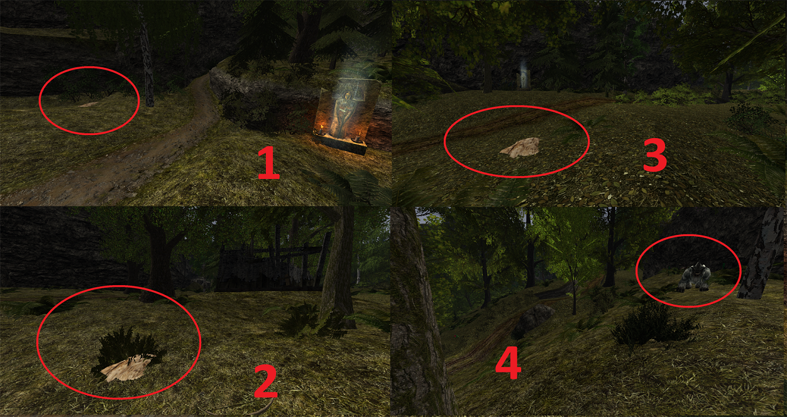

Gothic 2: New Balance - Solucja
Rozdział I
Droga do miasta
Zadania:
Nocna Bestia
Mrok północy dla Lestera
Zioła dla Constantina
Kamienie runiczne
Bandyci Cavalorna
Stara chata Cavalorna
Listy gończe
Ubranie robocze od Lobarta
Bandyci na farmie Lobarta
Kłopotliwy strażnik
Zebrać rzepę z pola
Rzepa dla Hildy
Patelnia dla Hildy
Za butelkę wina
Nóż Hildy
Obawy Lobarta
Bezsenność Vino
Człowiek z opaską na oku
Droga do miasta khorinis
Nocna Bestia
Zadanie dostajemy od Xardasa na początku gry. Musimy się udać do stawu obok jaskini z goblinami którą dostajemy się do kotlinki Lestera. Znajduje się tam zębacz, którego zabijamy i wracamy po nagrodę do Xardasa.
Mrok północy dla Lestera
Jeśli zagadamy Lestera podczas gdy śpi w Wieży Xardasa, poprosi on nas, abyśmy przynieśli mu skręt Mrok Północy. Można go znaleźć w skrzyni w obozie bractwa w Khorinis obok Baala Oruna. Zanosimy skręt do Lestera i dostajemy w zamian szczaw królewski.
Zioła dla Constantina
Lester mówi nam, że żeby jeśli chcemy dostać się do miasta, musimy zebrać 10 sztuk dowolnej rośliny, a wtedy strażnicy wpuszczą nas bez problemu. Zbieramy rośliny i dajemy je strażnikowi pod południową bramą Khorinis. Będąc w mieście mówimy Constantino, że mamy dla niego rośliny (możliwe dopiero po odblokowaniu rozmów z mistrzami).
Dodatkowo lepiej zrobić tak jak napisałem w zadaniu: Jak dostać się do miasta Khorinis.
Kamienie runiczne
Zadanie pojawia nam się w dzienniku kiedy podejdziemy do kamienia teleportacyjnego na prawo zaraz po wyjściu z wieży Xardasa (Taki słup pokryty napisami). Wracamy do Xardasa, a on opowiada nam o kamieniach druidów i daje runę teleportacyjną. Teraz wystarczy aktywować jeden taki teleport i powiedzieć o tym Xardasowi.
Bandyci Cavalorna
Na drodze do miasta spotykamy Cavalorna, atakowanego przez gobliny. Powie on nam, że został napadnięty przez bandytów. Zgadzamy się mu pomóc w zabiciu bandytów. Zanim jednak pójdziemy z Cavalornem polecam samemu udać się do jaskini z bandytami. Będzie tam stał bandyta Jesse, z którym jeśli odpowiednio poprowadzicie rozmowę, możecie uzyskać aż 2 punkty retoryki. Na końcu powiedzcie Jesse o Cavalornie by mógł uciec (będzie on potrzebny do innego zadania). Teraz wracacie do Cavalorna i rozprawiacie się z bandytami.
Stara chata Cavalorna
Przy pierwszej rozmowie Cavalorn się nas pyta gdzie zmierzamy. Mówimy mu, że z powrotem do Górniczej Doliny, a wtedy prosi on nas o przyniesienie skórzanej torby z jego starej chaty. Górniczej Dolinie idziemy do jego chaty, zabieramy mieszek i odnosimy Cavalornowi.
Listy gończe
Zadanie aktywuje się w rozmowie z Jesse na temat ujawnienia osoby, która nas ściga. Dajemy mu 10 sztuk złota i dowiadujemy się, że to Dexter nas szuka. Zadanie kończy się po rozmowie z Dexterem w jego obozie
Ubranie robocze od Lobarta
Zadanie polega na zakupie stroju roboczego od Lobarta. Można zaniżyć cenę maksymalnie do 30 sztuk złota, aby to zrobić, należy:
Powiedzieć Lobartowi, że jesteśmy za farmerami
Zrobić zadania opisane poniżej dla Lobarta, Hildy, Maletha i Vino.
Bandyci na farmie Lobarta
Chodzi o bandytów których zabiliśmy z Cavalornem. Wystarczy powiedzieć Malethowi, że zostali zabici.
Kłopotliwy strażnik
Na farmie Lobarta spotykamy strażnika Taylora. Strażnik Taylor nie będzie zadowolony z naszej obecności, po czym uzna, że jesteśmy zbiegłym więźniem. Teraz musimy wybrać środkową opcję dialogową, inaczej zostaniemy “wyjęci spod prawa”.
Następnie zgadzamy się na przeszukanie wieży, idziemy do Xardasa, a następnie wracamy do Taylora. Teraz mamy dwie opcje:
- Powiedzieć mu, że wieża jest zawalona (wtedy będziemy mogli okraść 1 osobę więcej)
- Pójść za nim do wieży, gdzie zabiją go szkielety, a my zyskamy jego ekwipunek.
Zebrać rzepę z pola
Lobart zleca nam, abyśmy zebrali rzepę i potem ją mu przynieśli. Wystarczy 15 zebranych rzep, by zrobić zadanie 5 możecie zachować dla siebie
Rzepa dla Hildy
Zanosimy zebraną rzepę Hildzie.
Patelnia dla Hildy
Hilda prosi nas o przyniesienie patelni. Idziemy do Canthara. który siedzi na ławce obok domu. Kupujemy u niego patelnię i zanosimy Hildzie.
Za butelkę wina
Vino chce byśmy przynieśli mu butelkę wina, które dostaniemy na przykład za wypędzenie bandytów dla Maletha
Nóż Hildy
Hilda prosi nas, abyśmy udali się do miasta i znaleźli kowala, który naostrzy dla nas nóż. Zrobi to dla nas Carl za niewielką opłatą. Z naostrzonym nożem wracamy do Hildy.
Obawy Lobarta
Lobart mówi nam o dziwnych gościach obok kamiennego kręgu. Okazuje się, że to obóz zbieraczy ziela. Rozmawiamy z ich przywódcą, a potem wracamy do Lobarta.
Bezsenność Vino
Vino mówi nam, że niedawno widział orka na skraju lasu. Natkniemy się na niego pod koniec polowania z Bartokiem. Po pozbyciu się orka wracamy do Vino i oddajemy mu znaleziony przy nim trunek.
Człowiek z opaską na oku
Należy zrobić przed udaniem się do Jarkendaru
Zadanie zaczyna się po spotkaniu Grega obok farmy Lobarta. Pyta nas o jakiś sposób dostania się do miasta, więc oddajemy mu strój farmera. Później spotykamy go obok tawerny Martwa Harpia, gdzie towarzyszymy mu w drodze do jaskini z goblinami. Pozbywamy się goblinów w jaskini, wykopujemy mieszek i odnosimy go Gregowi. Zdradza on nam wtedy położenie 4 kolejnych skrytek.
Należy uważać, aby w czasie robienia tego zadania nie sprzedać jego kosztowności
- Obok obozu myśliwych (schodki na farmę Bengara)
- Na wysepce obok chaty Erola
- Obok wodospadu niedaleko przejścia do Górniczej Doliny
- Za farmą Bengara
Po wykopaniu wszystkiego wracamy do Grega
Droga do miasta khorinis
Tutaj jest kilka sposobów:
- Możemy wziąć glejt od Canthara.
- Możemy dostać się do miasta za pomocą stroju Farmera (lepiej oddać go Gregowi)
- Powiedzieć strażnikowi, że mamy Zioła Constantina (dostajemy 1 retoryki i exp)
- Dostać się od strony morza
Obywatel
Droga na szczyt
Po wejściu do miasta można zauważyć, że mistrzowie nie chcą z nami gadać. Więc udajemy się do Ruperta i gadamy z nim o całej sytuacji. Rupert wysyła nas do Pablo, który każe nam najpierw zdobyć jakieś porządne ubranie. Idziemy do Hanny i kupujemy ubranie obywatela za 100 sztuk złota (50 złota jeśli należymy do gildii złodziei). Wracamy do Pablo który każe nam teraz zdobyć poparcie wpływowych mieszkańców portu. Chodzi o: Kardifa, Carla, Eddę, Halvora, Lehmara, Garvella i Brahima. Po zrobieniu dla nich zadań wątek się kończy, a my dostajemy możliwość rozmowy z mistrzami.
Zadania:
Szantażysta Moe
Dłużnik Lehmara
Figurka Eddy
Atrament dla Brahima
Delikatesy
Węgiel dla Carla
Narzędzie dla Garvella
ZADANIA NA ZOSTANIE OBYWATELEM MIASTA
Koniecznie należy obgadać wszystkie dialogi z Matteo i spytać go "Czego możesz mnie nauczyć"
Czeladnik Khorinis
Wielkie wyzwanie
Błogosławieństwo bogów
Rośliny dla Constantina
Matteo i Gritta
Skóry dla Bospera
Po zostaniu czeladnikiem uzyskujemy dostęp do górnego miasta.
Szantażysta Moe
Kardif mówi nam, że Moe odstrasza klientów i prosi nas, byśmy coś zrobili w tej sprawie. Idziemy do Moe i mówimy mu o niezadowoleniu Kardifa. Jeśli wcześniej go nie obiliśmy, to robimy to teraz, po czym gadamy z Moe. Wracamy do Kardifa i od teraz będzie nam płacił 10 sztuk złota dziennie.
Dłużnik Lehmara
Lehmar każe nam zabić typa który pożyczył pieniądze i się więcej nie pojawił. Chodzi o typa w magazynie w porcie.
Figurka Eddy
Edda mówi nam, że skradziono jej statuetkę Innosa. Statuetka znajduje się w skrzyni w magazynie portowym, trzeba zabić strażnika i zabrać klucz do skrzyni.
Brahim prosi nam, abyśmy mu przynieśli atrament. Można go kupić albo ukraść z domu Zurisa z regału.
Halvor prosi nas o przyniesienie 10 ostryg. Można je znaleźć w małżach na plaży.
Węgiel dla Carla
Carl prosi nas, abyśmy przynieśli 5 bryłek węgla. Węgiel można znaleźć w magazynie niedaleko Martina i w spalonej chacie obok Skipa.
Narzędzie dla Garvella
Garvell prosi nas, abyśmy mu przynieśli piłę, smołę i 2 młotki. Wszystkie składniki znajdziemy obok Garvella, Martina i Thorbena.
Należy zostać Czeladnikiem u jednego z mistrzów
Harad chce broń orka, Można ją zdobyć idąc na polowanie z Bartokiem. Zgodę Harada można też uzyskać zabijając bandytów obok farmy Akila którzy napadli kupca Hakona.
Błogosławieństwo bogów
Thorben prosi nas byśmy uzyskali błogosławieństwo od Innosa i Adanosa. Błogosławieństwo Adanosa dostaniemy od Vatrasa za darmo. Błogosławieństwo Innosa natomiast od maga ognia Darona. Jeśli ktoś chce zyskać, a nie stracić złoto to polecam wyrzucić złoto z ekwipunku (tylko gdzieś w ustronnym miejscu by npc nie zabrali) i zagadać do Darona. W rozmowie z Daronem wybrać opcję jestem biedakiem, a wtedy dostaniecie +1 retoryki i 20 sztuk złota i teraz dopiero spytać o błogosławieństwo. Nie zapomnijcie na końcu zabrać swojego złota które wyrzuciliście z ekwipunku .
Rośliny dla Constantina
Constantino daje nam listę ziół, a my mamy mu przynieść te zioła. Idziemy do Zurisa który nam powie gdzie szukać ziół. Wracamy do Constantino i koniec zadania.
Matteo i Gritta
Matteo prosi nas o odzyskanie długu od Gritty. Idziemy do Gritty i mówimy o długu, po czym mamy dwa rozwiązania:
- Zastraszamy ją sprzedaniem jej ubrań (Dostaniemy +1 retoryki i 100 złota)
- Płacimy za nią (Dostaniemy wino +1 do zręczności)
Z pieniędzmi wracamy do Matteo, a zadanie się kończy.
Skóry dla Bospera
Bosper prosi nas o przyniesienie 6 wilczych skór. Można je uzyskać na polowaniu z Bartokiem jeśli nauczyliście się skórowania. Ewentualnie można je znaleźć w namiotach obok obozu zbieraczy ziela przy farmie Lobarta, w karczmie Martwa Harpia lub w obozie obok Pepe.
Miasto Cz.1
Zadania:
Problemy ze strażą
Jedzenie dla Farima
Zatopiony statek
Informacje dla Garvella
Szalony Fellan
Miecz Alrika
Lucia
Złota misa Bromora
Piracki handel
Nowa broń dla Skipa
Facet bez dziury chodzi ponury
Eksperyment
Bandyci w latarni morskiej Jacka
Przeklęta latarnia
Fajka Jacka
Łuk Bospera
Srebro Coragona
Osełka Briana
Torba pełna rudy
Klienci Coragona
Człowiek pod obliczem bestii
Klucz Constantino
Pierwsza mikstura
Problemy ze strażą
Farim skarży się nam, że straż zabiera mu wszystkie ryby. Idziemy do Martina, który zgadza się pomóc. Wracamy do Farima.
Jedzenie dla Farima
Po zrobieniu zadania ze strażą Farim prosi nas o przyniesienie specjalnej zupki. Zupę zrobi Edda jeśli przyniesiemy jej 10 ryb, 5 serafisów, czerwony pieprz (który kupimy od Zurisa), ser i rum (z zadania "Piracki Handel")
Edda robi nam zupkę, którą zanosimy Farimowi.
Zatopiony statek
Po zrobieniu poprzedniego zadania Farim opowiada nam o kupieckim statku, który zatonął między Przeklętą latarnią, a wyspą nieopodal. Nurkujemy do szczątków statku, podnosimy paczkę i ją otwieramy, a zadanie się kończy.
Garvell chce się dowiedzieć, dlaczego Paladyni przybyli do miasta. Gadamy najpierw w Rangarem i dajemy mu piwa, aż się nie wygada, a my otrzymamy retorykę. Wracamy do Garvella i mówimy, czego udało nam się dowiedzieć. Resztę informacji możemy uzyskać od Hagena pod koniec 1 rozdziału albo od Andre, jeśli jesteśmy strażnikami miejskimi. Wracamy do Garvella z informacjami.
Szalony Fellan
Alvin skarży się, że Fellan cały czas tłucze młotkiem. Prosi nas, abyśmy coś z tym zrobili. Idziemy do Fellana spuszczamy mu lanie i wracamy do Alvina.
Miecz Alrika
Alrik mówi nam, że sprzedał swój miecz kupcowi o imieniu Jora i prosi, abyśmy go odzyskali. Miecz od Jory możemy kupić za 50 sztuk złota albo uzyskać za darmo. W tym celu należy nie rozmawiać z Jorą o mieczu, aż do momentu, gdy oddamy mu skradzione złoto. Z mieczem wracamy do Alrika.
Zadanie dostajemy po rozmowie z Bromorem, a następnie z Nadją. Okazuje się, że Lucia uciekła gdzieś z Elvrichem czeladnikiem Thorbena. Zostali oni porwani przez bandytów:
Pożegnalny list Lucii znajdziemy w namiocie w obozie bandytów za farmą Sekoba.
Pokazujemy ten list Elvrichowi, który jest w obozie bandytów nad jaskinią Sagitty, po czym ten wraca do miasta. Zadanie kończy się po rozmowie z Lucią w Jarkendarze.
Złota misa Bromora
Bromor mówi nam, że Lucia ukradła mu złotą misję i prosi o jej odzyskanie. Misę ma jeden z bandytów za farmą Sekoba (tam, gdzie znajdujemy list pożegnalny Lucii).
Piracki handel
Na plaży niedaleko Khorinis spotykamy Skipa, ten prosi nas byśmy udali się do Baltrama po dostawę. Idziemy do Baltrama odbieramy dostawę , dajemy ją Skipowi. Skip daje nam 2 butelki rumu które zanosimy Baltramowi.
Nowa broń dla Skipa
Skip prosi nas, abyśmy przynieśli mu nową broń. Chodzi o piracki kordelas, który znajduje się obok jaszczura na plaży przy statku Paladynów.
Facet bez dziury chodzi ponury
Po zrobieniu zadania Piracki handel Skip mówi nam, że jest samotny i potrzebuje kogoś do towarzystwa. Idziemy do Bromora i prosimy o jedną z dziewczyn Sonję. Bromor zażąda 2000 złota. Jeśli mamy 20 retoryki, to można zmniejszyć cenę o połowę do 1000.
Po ustaleniu warunków z Bromorem Sonja sama uda się do Skipa. Rozmawiamy z nim i teraz musimy pamiętać, aby po 3 dniach wrócić po Sonję, która wróci do Bromora. Jeśli się spóźnimy, dostaniemy znacznie mniej expa i Bromor nas zaatakuje.
Eksperyment
Ignaz prosi nas, abyśmy przetestowali zaklęcie zapomnienia. Najprościej po prostu ukraść coś z półki Ignazowi, uciec przed nim i rzucić czar, gdy stoi przy pulpicie/stole alchemicznym. Po użyciu zaklęcia rozmawiamy z Ignazem, który od teraz będzie z nami handlował i uczył nas alchemii.
Bandyci w latarni morskiej Jacka
Jack mówi nam, że bandyci zajęli jego latarnię. Idziemy do latarni, zabijamy bandytów i wracamy do Jacka.
Na pozytywne zakończenie tego zadania wymagane jest 40 retoryki.
Xardas nie zagada nas odnośnie zwoju, jeśli nie nacisnęliśmy znaku na ścianie

Jack opowiada nam o przeklętej latarni na morzu. Płyniemy tam i wspinamy się na samą górę. Wciskamy znak na ścianie i dostajemy wpis obok dziwnego szkieletu. Schodzimy teraz piętro niżej, gdzie znajdziemy pierścień z imieniem zaczynającym się na Ha. Rozmawiamy z Haradem, Hakonem i Halvorem, za co dostaniemy dodatkowego expa. Udajemy się teraz do Hanny, która opowiada nam tragiczną historię. Teraz idziemy do Xardasa, który daje nam zwój przywołania ducha. Czytamy go na szczycie latarni, po czym schodzimy na dół i rozmawiamy z widmem. Teraz musimy znaleźć pirata. W pierwszej kolejności idziemy do Kardifa, który odeśle nas do Jacka. Po zadaniu z fajką Greg zagada do nas, mówiąc kim jest Kevlar. Z tymi informacjami idziemy do niego i następnego dnia przypływamy do latarni i wykonujemy zalecenia ducha. Jeśli zapalimy latarnię mając 40 retoryki, Jack przeżyje i zadanie się zakończy.
Fajka Jacka
Zadanie to otrzymamy po oswobodzeniu latarni Jacka. Idziemy do Grega w Jarkendarze i zagadujemy go, gdy pali fajkę, którą z chęcią nam da. Greg pali w godzinach popołudniowych przed swoją chatą. Wracamy do Jacka po nagrodę.
Łuk Bospera
Od Bartoka możemy się dowiedzieć, że Bosperowi skradziono łuk, który znajdziemy w skrzyni w kanałach.
Srebro Coragona
Coragon mówi nam, że ukradziono mu srebra. Srebra znajdują się w tej samej skrzyni co łuk Bospera w kanałach.
Osełka Briana
Zadanie można uzyskać tylko jeśli nauczyliśmy się ostrzenia broni. Brian prosi nas, abyśmy przynieśli mu osełkę. Osełka znajduje się na półce obok Ramireza w siedzibie gildii złodziei.
Narzędzia Matteo
To zadanie trzeba koniecznie wziąć przed zostaniem czeladnikiem
Matteo opowiada nam o skradzionej formie do biżuterii. Po zrobieniu zadania z naszyjnikiem dla Hanny otrzymamy od niej mieszek, w którym jest klucz do skrzyni na wyspie złodziei. Z formą wracamy do Matteo, który od teraz będzie uczył nas wytwarzania potężnej biżuterii.
Zadanie zleca Wąż w karczmie Kardifa. Prosi on nas o odzyskanie torby rudy, którą Aleph i Snipes zakopali po upadku bariery. Poprawna opcja dialogowa zakłada przyjęcie oferty Węża - próba wytargowania większego udziału będzie skutkowała automatycznym niepowodzeniem zadania.
Po rozmowie z Wężem idziemy do Snipesa, który znajduje się na farmie Lobarta - za dnia na polu, w nocy w fotelu w domu Lobarta - i wybieramy opcję dialogową sugerującą, że Snipes ma niedokończoną sprawę z Wężem. Dalszy ciąg zadania ma miejsce dopiero w Górniczej Dolinie.
Teraz udajemy się do jaskini pod obozowiskiem Talbina i Engroma w Górniczej Dolinie. Zabijamy gobliny (zadanie Nieprzyjemna okolica od Engroma) i zbieramy Kość Alepha z ciała Alepha.
Ze znalezioną kością udajemy się do Xardasa po godzinie 9 i prosimy o przyzwanie ducha Alepha. Dowiadujemy się od niego, że rudę zakopał w podwodnej jaskini obok zamku (tej samej, którą wchodziliśmy pierwszy raz do zamku podczas zadania "Śladami ciemności"). W jaskini powinna pojawić się mała kupka ziemi, którą wykopujemy (pojawi się Szkielet Strażnik), a sakiewkę otwieramy i oddajemy kopaczom ich rudę.
Nagroda: Eliksir wytrzymałości od Snipesa
Coragon skarży się na brak klientów. Idziemy do Martina i rozmawiamy z nim o problemie. Następnego dnia wracamy do Coragona, a zadanie się kończy.
Nagroda: Piwo Coragona
Człowiek pod obliczem bestii
Po wykonaniu zadania Eksperyment Ignaz opowie nam i nieudanym eksperymencie na jego uczniu. Teraz po kolei rozmawiamy z Miką, Akilem i Orlanem, a na końcu udajemy się do Sagitty. Podczas rozmowy z nią pojawi się wspomniany uczeń, którego musimy odczarować. Vatras daje nam zwój, który przywróci świadomość bestii. Wracamy do jaskini, rozmawiamy z zielarką i używamy zwoju stojąc przy cieniostworze. Po wszystkim jeszcze raz gadamy z Sagittą i wracamy do Ignaza po nagrodę.
Klucz Constantino
Zadanie można dostać zaraz po odblokowaniu możliwości rozmowy z mistrzami. Constantino zgubił swój klucz, ale nie wie gdzie. Zuris powie nam, że Constantino zbierał zioła przy wschodniej bramie, więc zagadujemy Mikę. Kupujemy od niego klucz za 50 sztuk złota i wracamy do Constantino.Nagroda: Eliksir Ducha
Pierwsza mikstura
Zadanie otrzymamy, jeśli potrafimy jakąkolwiek miksturę i nie jesteśmy czeladnikiem Constantino. Pytamy go o naukę alchemii, a on daje nam recepturę, według której przygotowujemy eliksir. Niestety nam się to nie udaje, więc idziemy do Salandrila, który nam mówi, że ta receptura to bzdura. Wracamy do Constantino, który chwali nas za spostrzegawczość i od tej pory naucza nas alchemii.
Miasto Cz.2
Szczury pokładowe
Zabójca orków
Joe
Względy Canthara
Kupieckie złoto
Dostawa Baltrama
Żywy lub Martwy
Proste przyjemności
Badania Salandrila
Horror na cmentarzu
Sanktuarium w lesie
Tajemnica kapitana straży
Szczury pokładowe
Zadanie zleca Paladyn strzegący statku. Magowie Ognia, Wody oraz Czarnoksiężnicy mogą je zrobić w 1 rozdziale, Paladyni w 3, a reszta dopiero w V akcie. W zadaniu chodzi o to, by zabić szczury w ładowni statku.
Zabójca orków
Po wykonaniu zadania Wielkie wyzwanie pytamy Harada o jego przeszłość wtedy ten zleca nam misję byśmy przynieśli mu amulet orka elity. Specjalny ork elita respi się na drodze do kamiennego kręgu w lesie na północy (niedaleko jaskini z bandytami obok farmy Akila).
Zabijamy orka, zabieramy amulet i oddajemy go Haradowi.
Ork elita na tym etapie jest ciężkim przeciwnikiem, dlatego warto skorzystać z pomocy Laresa, gdy wybieramy się z nim po ornament.
Joe
Hakon mówi, że kiedyś widział jednego gościa Joe, ale jakiś czas temu zniknął. Joe jest zamknięty w wieży straży obok domu Constantino. Drzwi można otworzyć zarówno kluczem, jak i wytrychem, więc otwieramy/wyważamy zamek i gadamy z Joe.
Względy Canthara
Canthar prosi nas, abyśmy odzyskali jego stoisko na targu. Mówi nam, abyśmy podłożyli Sarze fałszywy list mówiący, że handluje ona bronią z Onarem.
Wybór możemy tutaj podyktować karmą:
- Jeśli chcemy karmy Beliara, to wydajemy Sarę
- Jeśli chcemy karmy Innosa, to wydajemy Canthara
Powyższy wybór nie ma już wpływu na Gildię Kupców i Gildię Zabójców - w przypadku wydania Canthara, po wzięciu na niego zlecenia od Asmala będziemy mieli możliwość "uwolnienia go" i zabicia na potrzeby zadania.
Kupieckie złoto
Jora mówi nam, że Rengaru go okradł. Wykonujemy zadanie Bezczelny złodziej, a potem oddajemy złoto Jorze.
Dostawa Baltrama
Baltram prosi nas o przyniesienie mu paczki z żywnością z farmy Akila. Udajemy się do Akila, zabijamy najemników (patrz zadanie Farmer w potrzebie) i odbieramy paczkę, po czym odnosimy ją do z powrotem do Akila (lub Nagura; patrz zadanie:Fałszywy Posłaniec)

Zadanie dostaniemy po zebraniu i przeczytaniu notatek z tablicy ogłoszeń w Koszarach. Musimy dopaść imiennych bandytów i przynieść ich głowy Andre:
- Farhaart - Aby do niego dotrzeć, należy wyjść przez wschodnią bramę Khorinis i kierować się w lewo(nie idziemy w górę do latarni, tylko cały czas zostajemy na dole). Natrafiamy na jaskinię i kierujemy się w lewą odnogę, aż natrafimy na bandytów.
- Kurdupel - Znajduje się on w jaskini z notatką Halvora. Idąc z farmy Akila do Mrocznego Lasu, zbaczamy ze ścieżki i trzymamy się skał po lewej stronie.
- Brzytwa - Znajduje się on w jaskini za lasem, w którym polujemy z Bartokiem.
- Skiron - Znajduje się on w miejscu bandytów z listem Fernando. Idąc drogą od Martwej Harpii na wykopaliska, skręcamy w dół obok kapliczki i "wracamy dołem" w stronę karczmy.
- Zręczny - Zaczynamy od gospody Martwa Harpia, po czym idziemy ścieżką, po której szliśmy z Laresem odnieść ornament, idziemy do momentu, do którego spotkamy pierwszą kapliczkę Innosa, bandyci są na wzgórzu za kapliczką.
- Dexter i Góra - Znajdują się oni w obozie Dextera, czyli nieopodal farmy Onara.
- Hannibal - Znajduje się on na nowych terenach obok wieży Xardasa. Idąc ścieżką skręcamy w lewo przed jaskinią z bandytami Cavalorna. Stamtąd idziemy cały czas prosto, aż natkniemy się na ścieżkę w górę, gdzie znajdziemy jego obóz.
Proste przyjemności
Zleca Ogrodnik po tym jak pokażemy mu złodziejski gest. Prosi nas o przyniesienie 5 skrętów i 3 butelek ginu. W zamian daje nam klucz do skrzyni, która znajduje się w na piętrze domu, gdzie śpią paladyni.
Badania Salandrila
Jak zdobędziemy orkowe pomyje po zabiciu jakiegoś orka to u Salandrila pojawi się zadanie. Oddajemy mu pomyje i czekamy kilka dni. Wracamy po 3 dniach i Salandril prosi nas, abyśmy przynieśli mu 10 butelek orkowych pomyj, które wypadają głównie z hersztów orków. Zanosimy pomyje i po czym będziemy mogli kupić u Salandrila specjalny eliksir.
Horror na cmentarzu
Zadanie zleca Lothar, jeśli jesteśmy obywatelami miasta.
Lothar prosi nas, abyśmy udali się w nocy na cmentarz obok miasta i sprawdzili co się tam dzieje. Idziemy nocą na cmentarz zabijamy 2 kretoszczury i wracamy do Lothara. Dowiadujemy się od niego, że zaginęła obywatelka Vanessa. Idziemy o nią spytać Fenie w porcie, po czym wracamy do Lothara. Ten odsyła nas do Gritty, a ona do Kardifa, u którego kupujemy informacje. Potem udajemy się do magazynu portowego (między Jackiem a koszarami), gdzie w dolnym pomieszczeniu znajdziemy ubranie.
Wracamy do Lothara, a ten nas wysyła do Constantino, aby wypytać o jego ucznia Rigeliona. Dowiadujemy się od niego, że jego uczeń przyjaźnił się z zarządcą cmentarza. Rozmawiamy z nim, po czym wracamy w nocy na cmentarz, gdzie czeka na nas zabójca. Czytamy jego notatkę i podnosimy kości, które leżą na przeciwnym końcu cmentarza. Udajemy się z nimi do Xardasa, który stwierdza obecność nekromanty w Khorinis. Z tą informacją udajemy się do Lothara, po czym z powrotem na cmentarz, na którym staczamy walkę z nowicjuszem mroku. Na koniec informujemy o wszystkim Lothara i odbieramy nagrodę.
Sanktuarium w lesie
Zadanie otrzymujemy po wykonaniu zadania Horror na cmentarzu i przeczytaniu notatki z ciała Rigeliona. Należy udać się do kaplicy na nowych terenach za Farmą Onara w celu dostarczenia przesyłki. Schodzimy po drabinie w dół i rozmawiamy z Mrocznym Mentorem.
Tajemnica kapitana straży
Po zabiciu bandyty Faarharta dowiadujemy się, że Wulfgar posiada pokaźny skarb. Idziemy do pokoju Wulfgara w koszarach, gdzie za skrzynią podnosimy notatkę. Udajemy się teraz do jaskini z widmem, między Grimbaldem, a Słonecznym Kręgiem. Z nieumarłymi możemy wybiec, podnieść notatkę i klucz, a następnie uciec. Teraz czytamy znalezioną notatkę i wchodzimy w interakcje z obrazem Rhobara w pokoju Wulfgara, co skutkuje przesunięciem się regału. Zabieramy zawartość skrzyń, a zadanie się kończy.
Miasto cz.3
Zadania
Zadanie rozpoczyna się po przeczytaniu notatki, która wypada z jednego z bandytów w jaskini z Faarhartem (przed plażą Skipa, prawa odnoga).
Dowiadujemy się o niejakim Kreygu, który ponoć posiada dużo złota. Aby rozpocząć poszukiwania, udajemy się do Lorda Andre z zapytaniem, czy może kogoś takiego złapali.
Teraz należy udać się ścieżką w stronę latarni morskiej, na której spotkamy owego bandytę. Dochodzi z nim do walki, zbieramy i czytamy notatkę.
Następnie udajemy się do latarni morskiej w celu pokonania kolejnego rzezimieszka. Zdobywamy kolejną notatkę, a w niej klucz. Wracamy się teraz do jaskini, w której była pierwsza notatka.
Możemy otworzyć drzwi i przejść dalej. Spotykamy tam strażnika miejskiego, a rozmawiając z nim mamy 2 opcje:
1. Przerwać śledztwo, otrzymać za to 1500 złota i eliksir życia.
2. Kontynuować śledztwo, atakując strażnika. Otrzymujemy notatkę, czytamy i udajemy się do Wulfgara. Umawia nas na spotkanie w znanej nam już jaskini. Rozmawiamy i idziemy za Valeranem.
Rozmawiamy z niewolnikami, a następnie mówimy Valeranowi o naszej decyzji:
- Dobra, jestem z wami. - Nie zabijamy bandytów, będziemy dostawać codziennie, przez 30 dni, 200 sztuk złota (lub równowartość w bryłkach złota) od Valerana w górnym mieście. -25 karmy u Innosa.
- Po prostu zabiję was wszystkich - Bonus za odwagę - 3000 expa, 2000 złota i 500 expa od niewolników.
- Puść niewolników - Musimy zabić wszystkich, ale dostajemy +35 karmy u Innosa, 1000 expa oraz 500 expa i 2000 złota za uwolnienie niewolników.
Najkorzystniej wybrać jedną z opcji w której Valeran przeżyje, czyli albo zrezygnować na początku, albo z nimi współpracować. Jest on bardzo potrzebny do zadania Asystent w Gildii Kupców.
Wątek Gallahada
Zadania:
Zadanie Gallahada
Zemsta na Regisie
Tajemnicze spotkanie
Podręcznik retoryki
Dług Lutero
Orkowa mikstura
Wykwintne jedzenie
Zadanie Gallahada
Ważne jest, aby pilnować spotkania w tawernie oraz nie wydawać Fernando, aż do zakończenia tego questa
Po zagadaniu do Gallahada dwa razy dowiadujemy się, że był kiedyś miejskim magiem i chce powrócić na swoją pozycję. Potrzebuje do tego listów polecających od wpływowych osób z górnego miasta, którymi są Gerbrandt, Lutero, Fernando i Salandril. Można też wziąć list od Valentino, ale nie jest on zbyt znaczący dla Gallahada.
Po zebraniu wszystkich listów polecających zanosimy je Gallahadowi, a następnie udajemy się do Lariusa. Musimy z nim porozmawiać przed ratuszem około 13. Jeśli mamy dostęp do ratusza robiąc to zadanie, to nie można z nim pogadać w środku, bo uzna, że przeszkadzamy mu w pracy Po pozytywnej reakcji Lariusa wracamy do Gallahada, który oddaje nam swoją chatę do użytku i każe zgłosić się po nagrodę w ratuszu. Następnego dnia wracamy i mamy do wyboru:
- Złoto (Nieopłacalne)
- Dwie mikstury stałe (Wybieramy na gildiach wojowniczych)
- Naukę magii (Konieczne na gildiach magicznych)
Zemsta na Regisie
Valentino prosi nas, abyśmy pobili Regisa. Bijemy go i wracamy do zleceniodawcy.
Tajemnicze spotkanie
Bardzo ważne jest stawienie się na spotkanie tego samego dnia
Gerbrandt daje nam list i sakiewkę. O północy mamy spotkać się z nieznajomym w gospodzie Orlana. O północy rozmawiamy z Orlanem o naszym spotkaniu, a następnie udajemy się do ostatniego pokoju na piętrze. Podczas rozmowy z nieznajomym wybieramy opcje:
Cóż… Ja → Proszę, weź ten list i sakiewkę → Nie mogę ci tego powiedzieć → Głupie czy nie, walczmy!
Do walki nie dochodzi, a z informacjami wracamy do Gerbrandta, co otwiera nam możliwość dołączenia do gildii zabójców.
Podręcznik retoryki
Fernando chce zdobyć Podręcznik Retoryki, który jest w posiadaniu Gallahada. Były mag nie chce go oddać po dobroci, więc idziemy do Ignaza, który prosi nas o wysłanie do niego Gallahada po zioła. Wracamy do Gallahada, rozmawiamy z nim i czekamy, aż wyjdzie z chaty i zabieramy książkę ze stołu. Po przeczytaniu oddajemy ją Fernando i otrzymujemy upragniony list.
Dług Lutero
Lutero prosi nas o przyniesienie weksla od Lehmara. Weksel znajduje się w skrzyni za ścianką na parterze. Aby się do niej dostać, należy wcisnąć przycisk po lewej stronie kominka na piętrze. Z wekslem wracamy do kupca i otrzymujemy list polecający.
Orkowa mikstura
Salandril prosi nas, abyśmy przynieśli mu orkową miksturę. Po tej rozmowie na lewo od wschodniej bramy pojawia się ork, którego możemy zaprowadzić do miasta lub za opłatą zabić wraz z Miką. Po zdobyciu mikstury wracamy do Salandrila i dostajemy list.
Gallahad prosi o przyniesienie mu 3 butelek wina, sera, szynki, miodu i winogrona. Powinniśmy już mieć wszystko poza winogronami, które zbieramy w klasztorze lub kupujemy od kupców w mieście.
Gildie Główne
Strażnik miejski/Paladyn
Zadania do przyjęcia na Strażnika Miejskiego
Przyjęcie do straży miejskiej
Ułatwione przyjęcie do straży
Zadania dostępne tylko dla strażnika miejskiego
Hordy orkowych wojowników (Rozdział 4)
Przyjęcie do straży miejskiej
Są 3 sposoby na dołączenie:
- Zostanie obywatelem miasta
- Wykonanie zadania "Ułatwione przyjęcie do straży"
- Zabicie dla Andre gildii złodziei (nie polecam)
Ułatwione przyjęcie do straży
W trakcie rozmowy o gildiach z Vatrasem ten wysyła nas do Laresa. Idziemy do Laresa i w rozmowie z nim wybieramy, że chcemy dołączyć do straży, ten natomiast każe nam iść do Martina. Martin mówi, że ktoś podkrada nocą zapasy z magazynu, przychodzimy w nocy i okazuje się, że złodziejem jest Rangar, mówimy o tym Martinowi, a ten daje nam list polecający. Zanosimy list Lordowi Andre i możemy już dołączyć do straży.
Paczka pełna ziela
Andre zleca nam przyniesienie paczki ziela. Paczka jest w magazynie portowym , zapewne już ją zdobyliście w zadaniu Dłużnik Lehmara. Zanosimy paczkę do Andre albo mówimy, że wrzuciliśmy ją do morza jeśli wcześniej daliśmy paczkę Cipherowi na farmie Onara.
Afera z zielem
Andre każe nam dowiedzieć się, kto w porcie handluje zielem. Zakładamy inny pancerz i idziemy do Czerwonej Latarni. Płacimy Bromorowi, idziemy z Nadją na górę i pytamy ją o handel zielem. Za 50 sztuk złota Nadja powie nam, że to Borka handluje zielem. Idziemy do niego i kupujemy skręta za 50 złota (Nie zdradzamy Nadji), po czym wracamy do Andre.
Gdzie jest Peck?
Andre zleca nam, abyśmy odnaleźli Pecka. Peck znajduje się w Czerwonej Latarni, gdzie mówimy mu, że Andre go szuka, po czym Peck wraca. W rozmowie z Andre możemy powiedzieć prawdę o Pecku albo po prostu mówimy, że spotkaliśmy go na mieście. W zależności od wyboru dostaniemy gorszą lub lepszą broń od Pecka.
Problemy na farmie Lobarta
Andre wysyła nas na pomoc farmerowi Lobartowi. Idziemy na jego farmę i dowiadujemy się o pladze polnych bestii, które oczywiście zabijamy. Po pozbyciu się insektów wracamy do Lobarta, a następnie do Andre.
Kryjówka bandytów
Zadanie zleca Wulfgar, jeśli zrobiliście wszystkie poprzednie zadania. Mamy zabić bandytów w jaskini za lasem z polowania Bartoka. Zabijamy bandytów, zabieramy notatkę z ciała ich szefa, czytamy i pokazujemy ją Wulfgarowi. Okazuje się, że w straży jest szpieg i w tym celu Wulfgar wysyła nas do Dextera. Jeśli Dexter jeszcze żyje, podczas rozmowy pytamy o szpiega , Dexter nie chce nic powiedzieć, w takim razie zabijamy go i zabieramy notatkę z jego ciała. Po przeczytaniu listu okazuje się, że szpiegiem jest Peck. Mówimy o tym Wulfgarowi, który daje nam dwa pancerze, jeden pod siłę, drugi pod zręczność.
Gildia zabójców w Khorinis
Andre daje nam zadanie zlikwidowania gildii zabójców. Aby dowiedzieć się o gildii, musimy być w gildii złodziei. Rozmawiamy z Cassią i Ramirezem, a następnie z Gillianem, który gra na placu wisielców na scenie. Następnego dnia spotykamy się z nim w domku niedaleko statku paladynów. Rozmawiamy z nim tam i dowiadujemy się, że naprawdę nazywa się Asmal i jest liderem gildii zabójców. Zadanie kończy się na zabiciu Asmala, ale najlepiej zrobić to po wykonaniu dla nich zadań, gdy mamy możliwość wyzwać go na pojedynek.
Awans na Paladyna (Rozdział 3)
Paladynem możemy stać się w 3 rozdziale, w tym celu musimy uwolnić Benneta (patrz zadanie Uwolnić Benneta). Po uniewinnieniu Benneta możemy już oficjalnie dołączyć do Paladynów. Dostajemy pancerz rycerza i idziemy do Harada i wybieramy miecz jedno lub dwuręczny, a następnie udajemy się do Marduka, który nauczy nas konsekrować miecz.
Tajemna wiedza (Rozdział 3)
Po przekuciu pancerza rycerza Harad powie nam, o dodatkowym wzmocnieniu pancerza, o którym powie nam Marduk. Idziemy do maga ognia, który wręcza nam modlitewnik. Z jego pomocą możemy konsekrować pancerz rycerza i paladyna (tego pierwszego się nie opłaca), pod warunkiem, że go przekuliśmy i mamy odpowiednią ilość złota.
Zbezczeszczone kapliczki (Rozdział 3)
Ulthar zleca nam oczyszczenie kapliczek Innosa. Nie wszystkie kapliczki są zbezczeszczone, więc warto kupić ich mapę od Brahima i się nią posłużyć. Kiedy dostaniemy odpowiedni wpis w dzienniku, wracamy do Ulthara po nagrodę.
Hordy orkowych wojowników (Rozdział 4)
Na moście przy farmie Bengara spotkamy orkowego przywódcę, który do nas zagada. Zabijamy go i zabieramy jego pierścień. Pokazujemy go Hagenowi, który będzie odtąd skupował od nas takie pierścienie. W jaskini za lasem z polowania z Bartokiem znajdziemy wodza orków, który posiada mapę obozów orków. Po oddaniu odpowiedniej ilości pierścieni, misja zakończy się samoistnie.
Łowca demonów
Aby zostać Łowcą Demonów, nie możemy przynależeć do żadnej innej gildii, a następnie udać się do paladyna o imieniu Angel, który stacjonuje w porcie, nieopodal Esmeraldy.
Po zapłaceniu 1000 sztuk złota i wręczeniu mu stałej mikstury, zostaniemy rekrutem
Siedziba zakonu
Zadanie w mieście
Nieumarli przy tawernie
Serce demona dla Severina
Przyzwanie demona
Opuszczona kaplica
Zagubiony rekrut
Poszukiwania rekrutów
Siedziba zakonu
Naszym pierwszym zadaniem jako nieopierzony Łowca Demonów będzie znalezienia miejsca, w którym można się osiedlić. Udajemy się do Orlana, a następnie musimy znaleźć opuszczoną posiadłość w lesie za farmą Onara. Znajdziemy ją nad jeziorem, w lewej części lasu. Po wejściu na dziedziniec wracamy do Angela, który następnie zjawia się wraz z resztą zakonników i pomaga nam oczyścić miejsce z nieumarłych. Przy okazji znajdujemy notatkę wyjaśniającą śmierć mieszkańców, a nasze zadanie się kończy.
Zadanie w mieście
Angel prosi nas o dostarczenie Hagenowi listu, w którym prosi o dofinansowanie, a także o powiadomienie kowala w porcie, aby wraz z resztą udał się do posiadłości. Po wszystkim wracamy do Angela.
Nieumarli przy tawernie
Po powrocie z ludźmi Angel wysyła nas do Severina, z którym udajemy się do Martwej Harpii. Stamtąd zabijamy z nim nieumarłych na pobliskim cmentarzu i wracamy do posiadłości.
Serce demona dla Severina
Jak sama nazwa wskazuje, jeśli chcemy, aby Severin nas czegoś nauczył, musimy dostarczyć mu serce demona. Zdobędziemy je z Obrońcy Królików (Demona pojawiającego się po pokonaniu 20 królików), kupimy u Lutero lub zdobędziemy podczas zadania "Przyzwanie demona".
Przyzwanie demona
W drugim rozdziale Angel powiadomi nas o pobliskiej zniszczonej wieży, w której mógłby przywołać demona, a następnie go unicestwić. O godzinie 22 idziemy w tamto miejsce i przeprowadzamy rytuał, po którym zabijamy pomiot Beliara.
Opuszczona kaplica
Po wykonaniu zadania "Horror na cmentarzu" znajdziemy notatkę w ciele Rigeliona, która opowie o spotkaniu w opuszczonej kaplicy. Znajdziemy ją nieopodal posterunku Łowców Demonów, więc udajemy się tam i rozmawiamy z mrocznym rycerzem, po czym zdajemy relację Angelowi i wraz z resztą zakonników idziemy go zabić.
Zagubiony rekrut
Jakiś czas po zabiciu mrocznego rycerza wracamy do Angela, który opowiada nam o rekrutach, którzy udali się na przeszukanie kaplicy. Jeden z nich nie wrócił, więc idziemy go poszukać. W podziemiach kaplicy napotykamy demona i martwego rekruta, którego notatki chętnie obejrzy Angel.
Po odnalezieniu martwego rekruta z poprzedniego zadania okazuje się, że Angel przeprowadził rekrutację ochotników na farmie Onara - znajdziemy ich nieopodal Dara. Eskortujemy ich pod posiadłość, po czym zdajemy relację Angelowi.
Zadania:
Dołączenie do najemników
Ułatwione przyjęcie do najemników
Jeden z najemników
Szacunek
Gniazdo polnych bestii
Miecz Roda
Sekretna technika Roda
Sztuka walki
Wyzwanie Jarvisa
Strzał w dziesiątkę
Za kilka ziół więcej
Paczka z zielem
Pancerz z płytek pancerzy pełzaczy
Zebrać czynsz
Odpędzić straż
Odkupienie
Gulasz
Cztery wilki Pepe
Skopać tyłek Bulkowi
Czarna skóra
Puchar Kharima
Laboratorium Jacko
Lokaj Sędziego
Oferta pokoju
Bajer (Rozdział 4)
Dołączenie do najemników
Aby dołączyć do najemników trzeba zdobyć poparcie większość najemników (Zadania poniżej), a także przejść test Torlofa.
Ułatwione przyjęcie do najemników
Vatras mówi nam, że możemy dołączyć do jednej z 3 gildii które mają największe wpływy. W tym celu rozmawiamy z Laresem. On wyśle nas do najemnika Corda. Zajmie się on naszym testem, który dostaniemy od Torlofa. Pomoże nam pod warunkiem, że dowiemy się od Dextera o Patricku. Idziemy do obozu bandytów, gadamy z hersztem, a następnie wracamy do Corda, dzięki czemu test Torlofa mamy z głowy.
Jeden z najemników
Musimy przejść test Torlofa i zyskać poparcie większości najemników. Następnie udajemy się do Lee, potem Onara i znowu Lee. Oficjalnie stajemy się Najemnikiem.
Szacunek
Jak sama nazwa wskazuje, zadanie polega na zebraniu poparcia najemników.
Gniazdo polnych bestii
Przed farmą Onara spotykamy Festera, który ma za zadanie pozbyć się polnych bestii z ich gniazda. Zgadzamy się mu pomóc w zamian za poparcie, idziemy zabić insekty, po czym okazuje się, że Fester nas oszukał. Obijamy mu mordę, a zadanie kończy się pomyślnie.
Miecz Roda
Rod uważa nas za słabeusza i twierdzi, że nie dalibyśmy rady udźwignąć jego miecza. Jeśli mamy 30 siły, to się na to zgadzamy i podnosimy miecz z łatwością. Teraz mamy dwa wyjścia:
- Oddajemy Rodowi miecz i zyskujemy jego poparcie
- Nie oddajemy mu miecza, dochodzi do walki, po której zyskujemy jego poparcie (jeśli z nim wygramy)
Sekretna technika Roda
Rod prosi nas o przyniesienie mu 12 butelek ginu w zamian za zdradzenie sekretu walki. Oddajemy mu tuzin butelek alkoholu, a on wręcza nam pierścień, który zwiększy nasze władanie bronią dwuręczną.
Sztuka walki
Cord zgodzi się na nasze przyjęcie do najemników,pod warunkiem, że mamy wyuczone 30% walki bronią jedno- lub dwuręczną.
Wyzwanie Jarvisa
Jarvis da nam swoje poparcie, jeśli pobijemy chłopaków Sylvia. Są to: Bullko, Raoul, Fester, Rod i Sentenza. Najłatwiej pokonać Roda, Raoula i Festera. Wystarczy pobić trójkę z nich, ale jeśli pobijemy ich wszystkich łącznie z Silviem, to otrzymamy sporo doświadczenia i osiągnięcie.
Strzał w dziesiątkę
W tej misji warto skorzystać z wolnego celowania, jeśli normalnie tego nie robimy
Wilk dla nam swoje poparcie jak trafimy z łuku w środek 3 tarcz. Tarcze znajdują się za kuchnią Eddy. Trzeba stać dokładnie przy słupku ze wbitą strzałą i trafić z tego miejsca w środek 3 tarcz. Otrzymanie 50 expa oznacza, że ta tarcza jest już zaliczona. Po celnym trafieniu w każdą z tarcz wracamy do Wilka.
Za kilka ziół więcej
Cipher da nam swoje poparcie jeśli damy mu 10 łodyg bagiennego ziela.
Paczka z zielem
Cipher mówi, że ktoś ukradł mu paczkę bagiennego ziela, podejrzewa Bodo. Gadamy z Bodo, a następnie z Darem. Okazuje się, że Dar ukradł paczkę, więc obijamy go, a on zdradza nam położenie paczki. Polecam powiedzieć Cipherowi o Darze (darmowy exp). Paczkę powinniśmy już mieć ze sobą, jako że zabiliśmy Millsa w zadaniu Dłużnik Lehmara. Oddajemy paczkę Cipherowi i na tym zadanie się kończy.
Pancerz z płytek pancerzy pełzaczy
Zadanie nam się aktywuje kiedy spytamy o zbroję z płytek (patrz zad. Zbroja Barema). 7 płytek daje nam Barem, a trzy z nich można znaleźć w jaskiniach z pełzaczami w Khorinis (lub kupić dwie od Lutero). Po zebraniu 10 sztuk idziemy z nimi do Wilka i następnego dnia odbieramy zbroję.
Zebrać czynsz
Jest to jedno z zadań związanych z testem Torlofa.
Torlof prosi nas byśmy udali się do Sekoba i odebrali od niego czynsz. Farmer nie chce z nami gadać, więc go bijemy i odbieramy czynsz. Wracamy do Torlofa
Odpędzić straż
Jest to jedno z zadań związanych z testem Torlofa.
Mamy udać się na farmę Bengara i rozprawić z patrolem straży miejskiej. Idziemy do Bengara i rozmawiamy z nim, następnie zabijamy strażników miejskich i wracamy do Torlofa.
Odkupienie
Jak jesteśmy najemnikiem to Baltram nie będzie chciał z nami handlować. Będziemy mogli to odpokutować, jeśli przyniesiemy mu 10 szynek i 10 butelek wina.
Gulasz
Po pobiciu Bullko lub zasłużeniu na gulasz w jakikolwiek inny sposób możemy zapytać Theklę dokładkę. Wtedy wysyła nas ona do Sagitty, u której dostajemy paczkę z ziołami, za którą otrzymamy kolejną porcję gulaszu.
Cztery wilki Pepe
Pasterz Pepe mówi nam, że wilki podkradają mu owce. Wilki znajdują się niedaleko Pepe w obozie z namiotem, zabijamy je i wracamy do Pepe.
Skopać tyłek Bulkowi
Po wykonaniu zadania z wilkami dla Pepe mówi nam, że Bullko miał pilnować owiec, ale tego nie robi. Idziemy do Bullko, obijamy mu mordę i wracamy do Pepe.
Czarna skóra
UWAGA: Zadanie dostępne po dołączeniu do jakiejkolwiek gildii
Raul prosi nas o przyniesienie skóry czarnego trolla. Tą z Khorinis lepiej oddać Falkowi, ale kolejną zdobędziemy już w Jarkendarze.
Puchar Kharima
Na farmie Onara spotykamy starego znajomego Kharima. Prosi on nas o przyniesienie jego złotego pucharu, który wygrał na arenie. Znajdziemy go w miejscu areny Starego Obozu.
Laboratorium Jacko
Cipher prosi nas, abyśmy przynieśli mu paczkę bagiennego ziela z laboratorium obok Nowego Obozu. Gorzelnia znajduje się w jaskini z bandytami, przy zatopionej chacie, na lewo od wejścia na lodowy biom.
Lokaj Sędziego
Lee chce zdemaskować Sędziego, więc prosi nas, abyśmy udali się do Sędziego i zaoferowali mu współpracę. Musimy przed tym udać się do Vatrasa, który rzuci na nas stosowne zaklęcie. Jako test zaufania, musimy przynieść młot Innosa z klasztoru. Teraz sędzia każe nam odnaleźć zbiegłych więźniów i ich zabić. Pierwszy z nich jest w jaskini z bandytą Jesse. Rozmawiamy ze zbiegiem, a następnie idziemy do Martwej Harpii. W gospodzie znajduje się kolejny zbieg, który zdradza nam położenie ich przywódcy. Na farmie Onara spotykamy Morgaharda, który wręcza
nam list, którego potrzebuje Lee. Odnosimy go do Lee, a zadanie się kończy.
Oferta pokoju
Lee daje nam list, który musimy dostarczyć Hagenowi. Idziemy do Hagena i wracamy do Lee.
Bajer (Rozdział 4)
Dar chce zaimponować Lee, więc prosi nas o przyniesienie pierścienia orkowego dowódcy, który powinniśmy już mieć, jeśli zabijaliśmy orków w Khorinis.
Nagroda: Amulet zręczności albo 1200 sztuk złota
Mag ognia
Zadania
Jak się dostać do klasztoru
Ułatwione przyjęcie do klasztoru
Służba społeczności
Szata nowicjusza
Komnaty nowicjuszy
Baranie kiełbasy
Winogrona
Siedem ziół
Zaginiony przepis
Opolos i przepis
Modlitwa za Paladynów
Dostawa wina
Kłopot Isgarotha
Trening bojowy dla Babo
Trening bojowy dla Babo
Darowizna dla klasztoru
Próba ognia
Żywa skała
Ścieżka wiernych
Runa ognia
Opowieści dla Karrasa(2czesc)
Babo i ogród
Zbrodnia Dyriana
Opolos i biblioteka
Szansa dla Igaraza
Poszukiwacze (3 Rozdział)
Jak się dostać do klasztoru
Aby zostać nowicjuszem. musimy mieć 1000 złota i owce (kupimy od Pepe za 100 sztuk złota). Ewentualnie pozostaje "Ułatwione przyjęcie do klasztoru".
Ułatwione przyjęcie do klasztoru
Podczas rozmowy z Vatrasem o dołączeniu do gildii, zostajemy wysłani do Laresa. U Laresa wybieramy, że chcemy przyłączyć się do magów ognia, więc idziemy do Vatrasa, który wysyła na do Darona. Mag opowiada nam o tym, że napadły go gobliny i skradły cenny posążek. Znajdziemy je w jaskini, do której prowadzi nas Greg. Z posążkiem idziemy do Pedro, który zgadza się nas wpuścić do klasztoru.
Służba społeczności
Zadanie zleca Parlan. Musimy zyskać uznanie magów poprzez wykonywanie zadań w klasztorze. Jak już zdobędziemy odpowiedni szacunek, to otrzymamy klucz do biblioteki.
Gdy pytamy Parlana o szatę nowicjusza, ten mówi nam, że jej nie da, bo brakuje tkaniny. Erol musi znajdować się w swojej chacie, gdzie udaje się po oddaniu mu starych tabliczek. Teraz idziemy do niego i kupujemy materiał, który zanosimy Parlanowi. Dostajemy szatę nowicjusza, a zadanie się kończy.
Komnaty nowicjuszy
Parlan każe nam posprzątać komnaty nowicjuszy. W tym celu szukamy 4 pomocników:
-Babo zgodzi się nam pomóc jeśli przyniesiemy mu zwój Pięść Wichru (leży na trawie pomiędzy kaplicą Isgarotha, a mostem do klasztoru)
-Pozostali trzej nowicjusze nie mają imion, wystarczy z nimi porozmawiać. Jeden zgłosi się od razu, drugi chce 50 sztuk złota, a trzeci zgodzi się, jeśli będziemy mieli przynajmniej jednego nowicjusza do pomocy.
Teraz sami idziemy pozamiatać komnatę po lewo przed pokojem magów po lewej stronie. Po otrzymaniu wpisu w dzienniku wracamy do Parlana.
Baranie kiełbasy
Gorax daje nam klucz do klasztornej spiżarni , każe zabrać stamtąd baranie kiełbasy i oddać nowicjuszom. Idziemy do spiżarni i wyjmujemy kiełbasy z kufra, a następnie rozdajemy je nowicjuszom. Pedro i Babo chcą dwie kiełbasy, niestety tylko jednemu z nich możemy ofiarować dodatkową kiełbasę. Pedro opowie nam o miejscu, gdzie znajdziemy ogniste pokrzywy dla Neorasa (których nie da się nie zauważyć, idąc do klasztoru), a Babo da nam magiczne zwoje.Po rozdaniu kiełbas wracamy do Goraxa.
Winogrona
Gorax prosi nas o zebranie winogron z roślin przy drzwiach klasztoru. Kiedy mu je oddamy, w asortymencie Goraxa pojawią się do kupna mikstury Amun-Su.
Siedem ziół
Neoras prosi nas o przyniesienie mu 7 ognistych pokrzyw, które zapewne już mamy, a jeśli nie, to znajdziemy je przed mostem prowadzącym do klasztoru.
Neoras prosi nas o przyniesienie przepisu, który znajduje się na skrzyni w spiżarni. Najlepiej jest pokazać go najpierw Opolosowi, a dopiero potem odnieść Neorasowi.
Opolos i przepis
Opolos chce, żebyśmy przynieśli mu recepturę. Chodzi o tą samą co chce Neoras, więc pokazujemy recepturę Opolosowi, zanim oddamy ją Neorasowi.
Modlitwa za Paladynów
Pytamy Marduka, czy ma dla nas jakieś zadania, a on prosi nas, abyśmy pomodlili się za paladynów z Górniczej Doliny. Wystarczy podejść do posągu Innosa i wybrać odpowiednią opcję dialogową.
Dostawa wina
Gorax prosi nas, abyśmy udali się do Orlana w Martwej Harpii i sprzedali wino za 240 złota. Nie zgadzamy się na oferty Orlana, tylko bierzemy wyznaczoną sumę i wracamy z nią do Goraxa.
Kłopot Isgarotha
Po pomodleniu się za paladynów Sergio wspomina nam o problemie Isgarotha. Idziemy do maga, który prosi nas o zabicie czarnego wilka czającego się przy ścieżce. Jeśli nie dajemy sobie z nim rady, możemy podbiec do Isgarotha, który go załatwi.
Trening bojowy dla Babo
Babo prosi nas, abyśmy udali się do Paladyna Sergio i poprosili go, aby nauczał Babo walki. Gadamy z Sergio który zgadza się trenować nowicjusza, po czym wracamy do Babo.
Darowizna dla klasztoru
Po ofiarowaniu Daronowi co najmniej 500 sztuk złota zleca on nam zaniesienie złota do klasztoru. Lepiej iść pieszo, jako że pojawiają się bandyci, za których otrzymamy dodatkową nagrodę. Złoto oddajemy Goraxowi, a zadanie się kończy.Po zrobieniu większości z tych zadań dostajemy klucz do biblioteki od Parlana.
Próba ognia
Jest to zadania na awans na Maga Ognia. W tym celu czytamy jeden z pulpitów w bibliotece i idziemy do Pyrokara, aby poddał nas próbie.
Żywa skała
Serpentes zleca nam zabicie Żywej Skały, czyli Magicznego Golema. Potrzebujemy do tego młota Innosa, który wykradniemy z podziemi. Samego golema znajdziemy na górce, na zakręcie na po drodze na wykopaliska Magów Wody. Po zabiciu go wracamy do Serpentesa i oddajemy młot.
Ścieżka wiernych
Pyrokar prosi nas o przyniesienie mu zawartości skrzyni w jaskini Próby Ognia. Jest ona niedaleko Czarnego Trolla, za mostem. Po drodze spotkamy Igaraza i Ulfa, z którymi warto porozmawiać, ale ich oszczędzić, bo są potrzebni do kilku zadań. Na miejscu spotkamy Agona, który nas zaatakuje. Lepiej go nie zabijać, tylko uśpić lub uciec, jako że później będą z nim dialogi w klasztorze. Z runą ze skrzyni wracamy do Pyrokara, co kończy nasze zadanie.
Runa ognia
Ulthar prosi nas o stworzenie runy ognistej strzały. Idziemy w tym celu do Hyglasa, który nauczy nas tworzenia runy ognistej strzały. Robimy runę na stole runicznym i zanosimy ją Ultharowi.
Opowieści dla Karrasa
Jeśli nie należymy do magów ognia, to jedyny pożytek z tych ksiąg to oddanie ich Gallahadowi
Karras prosi nas o znalezienie 5 tomów starożytnych opowieści i zwoju:
- Tom 1 znajduje się na szczycie latarni Jacka
- Tom 2 znajduje się w skrzyni na szczycie zniszczonej wieży obok Niclasa (przy rannym orku)
- Tom 3 znajduje się w jaskini z ogrem, w kotlinie na prawo od wschodniej bramy miasta
- Tom 4 znajduje się w skrzyni w małej piramidzie na wykopaliskach magów wody.
- Tom 5 znajduje się w lewej odnodze jaskini z Próby Ognia
- Zwój do otwarcia ksiąg znajduje się na schodkach krypty przy Farmie Onara
Zanosimy księgi Karrasowi i zadanie się kończy. (Warto najpierw oddać je do Gallahada dla statystyk, a następnie odkupić w handlu)
Babo i ogród
Babo chce być ogrodnikiem, a nie zamiatać komnaty
Zbrodnia Dyriana
Nowicjusz prosi o drugą szansę, chce zostać w klasztorze.
Opolos i biblioteka
Opolos chce uzyskać dostęp do klasztornej biblioteki.
Szansa dla Igaraza
Igaraz prosi nas byśmy wstawili się za nim u Pyrokara. Idziemy do Pyrokara i prosimy o drugą szansę dla Igaraza, ten się zgadza, jeśli wykonamy zadanie dla Talamona. Chodzi o zdobycie serca demona. Igaraz nie będzie zadowolony po przekazaniu mu wieści. W takim razie musimy odwalić za niego robotę. Musimy mieć wyuczone pozyskiwanie serc z wrogów (uczy Grom).
Najprościej będzie zabijać króliki, aż nie pojawi się ich demon boss. Po zdobyciu serca odnosimy je do Talomona i wracamy do Igaraza, który niedługo później zostaje magiem i handlarzem.
Serce demona można również kupić od Lutero.
Poszukiwacze (3 Rozdział)
W trzecim rozdziale gdy damy Pyrokarowi Almanach Opętanych (leży on obok kamiennego kręgu przy farmie Lobarta) otrzymamy od niego zadanie. Musimy odnaleźć wszystkie almanachy. Arcymag da nam listę osób opętanych i każe nam je sprowadzić do klasztoru. Teraz idziemy do
Karrasa i pytamy się, czy ma coś, co pomogłoby nam w walce z poszukiwaczami. Pokazujemy mu almanach i otrzymamy od niego amulet chroniący przed opętaniem.
Lista opętanych:
- Fernando znajduje się w lochach Khorinis w koszarach
- Vino znajduje niedaleko kamiennego kręgu na Farmie Lobarta
- Malak znajduje się w wąwozie w górach niedaleko Dextera
- Bromor znajduje się w burdelu Czerwona Latarnia
- W IV rozdziale
- Engrom znajduje się niedaleko paladyna Marcosa w jaskini w Górniczej Dolinie
- Randolph znajduje się na Farmie Akila
- W V rozdziale:
- Sekob znajduje się na jego farmie
- Brutus znajduje się w Zamku w Górniczej Dolinie, jednak dowiemy się, że jest opętany, tylko wtedy gdy wpuścimy orków do środka
- W VI rozdziale:
- Mario tylko jeśli zabraliśmy go ze sobą na Irdorath.
Mag wody
Zadania:
Przyjęcie do magów wody
Magowie Wody
Portal
Wodny krąg
Pomoc dla Laresa
Handlarz bronią dla bandytów
Riordian
Gdzie są zaginieni ludzie
Zaginieni ludzie
Kamienie teleportacyjne
Zadanie Saturasa
Wiadomość dla Isgarotha (Rozdział 2)
Jedzenie dla ubogich
Mikstury dla Vatrasa
Magiczny dziennik
Atak cieniostwora
Przyjęcie do magów wody
Aby zostać nowicjuszem wody, musimy wykonać jedno z poniższych zadań:
Gdzie są zaginieni ludzie, Handlarz bronią dla bandytów lub zebrać ornamenty Nefariusa
W celu zostania pełnoprawnym magiem musimy spełniać wymagania (40 inteligencji i 80 many), a także być w Jarkendarze.
Magowie Wody
Rozmawiamy z Vatrasem na temat magów wody i ich pracy, po czym odstajemy od niego ornament. Idziemy pogadać z Laresem i po tym jak załatwimy mu zmiennika, idziemy odnieść Ornament do magów wody. Dajemy ornament Nefariusowi, który zleca nam zebranie wszystkich ornamentów (patrz zadanie Portal) Po zebraniu ornamentów, musimy stać się członkiem wodnego kręgu, a także rozpocząć akt 2, po czym przedostać się do Jarkendaru.
Portal
Nefarius zleca nam zebranie wszystkich ornamentów:
- w kamiennym kręgu w lesie na północy, idziemy tam z Laresem (Tylko na poziomie Gothic)
- w kamiennym kręgu obok farmy Sekoba
- Ostatni ma Lothar
Co do ostatniego ornamentu idziemy do kamiennego kręgu obok farmy Lobarta, gadamy z Cavalornem, który mówi nam, żeby udać się do Paladynów po ornament. Rozmawiamy z Lotharem który oddaje nam ornament. Zadanie dobiega końca, gdy przejdziemy przez portal do Jarkendaru.
Wodny krąg
W drodze do miasta idąc od wieży Xardasa spotkamy Cavalorna, który walczy z goblinami. Pomagamy mu w walce i następnie z nim rozmawiamy. Mówimy mu, że idziemy do miasta, a on informuje nas, że jest członkiem wodnego kręgu. Mówi także, że został okradziony przez bandytów. Proponujemy mu pomoc w rozprawieniu się z bandytami. Gdy bandyci są już martwi, przeszukujemy Brago, bierzemy list i rozmawiamy z Cavalornem. Idziemy do miasta, a następnie rozmawiamy z Vatrasem, przekazujemy mu wiadomość od Cavalorna. Mówimy mu, że chcemy dołączyć do Wodnego Kręg. Vatras daje nam ornament, a my dajemy go Laresowi z którym idziemy do magów wody. Teraz musimy zebrać dla Nefariusa wszystkie ornamenty. Po ich zebraniu mówimy o tym Vatrasowi, po czym ten zgadza się na przyjęcie nas do Wodnego Kręgu. Idziemy do Martwej Harpii gadamy z Orlanem, po czym zjawia się cała ekipa. Gadamy z Laresem i oficjalnie dołączamy do wodnego kręgu, a na koniec wracamy do Vatrasa i oddajemy Laresowi jego pierścień wodnego kręgu.
Pomoc dla Laresa
Lares prosi nas o znalezienie mu zastępcy. Zakładamy pierścień wodnego kręgu i gadamy z Baltramem po czym wracamy do Laresa.
Handlarz bronią dla bandytów
Zadanie zleca Vatras, idziemy pogadać z Martinem. Teraz musimy zebrać kilka dowodów, pałasz bandytów, pierścień gildii kupieckiej Araxos (Ma go przy sobie jeden z bandytów więżących Elvricha, List obok skrzyni w obozie bandytów za farmą Sekoba. Okazuje się ze to Fernando, idziemy z nim pogadać, po czym wydajemy go u Martina. Na końcu gadamy z Vatrasem.
Riordian
Saturas prosi byśmy powiedzieli Riordianowi, że chce z nim pogadać.
Gdzie są zaginieni ludzie
Udajemy się do obozu Dextera niedaleko farmy Onara, mówimy strażnikowi imię ich wodza, po czym gadamy z Dexterem. Zabijamy go i czytamy notatkę z jego ciała , na koniec idziemy do Vatrasa.
Zaginieni ludzie
Mieszkańcy znikają na całym Khorinis. Musisz ich odnaleźć. Są to po kolei:
- Elvrich - mówi o nim Thorben. Jest w obozie bandytów nieopodal golema z zadania "Żywa skała".
- Lucia - mówi o niej Bromor. Jest w Jarkendarze w obozie bandytów. Nie będzie chciała wrócić.
- Joe - mówi o nim Hakon. Siedzi w wieży obok domu Thorbena. Trzeba otworzyć drzwi wytrychem lub kluczem Pecka.
- William - mówi o nim Farim. Jest martwy w ruinach miasta w Jarkendarze obok brzytwiaka.
- Monty - mówi o nim Garvell. Jest w kopalni złota w obozie bandytów.
- Tonak i Talbor - mówi o nich Akil. Są niewolnikami w kopalni w obozie bandytów w Jarkendarze.
- Pardos - mówi o nim Bengar. Tak samo jak wyżej.
- Patrick - mówi o nim Cord. Tak samo jak wyżej.
Zadanie zakończy się po uwolnieniu niewolników w Jarkendarze. Można jeszcze porozmawiać z zaginionymi jak wrócą do Khorinis
Kamienie teleportacyjne
Zadanie zleca nam Merdarion.
Da on nam klucz, który otwiera pomieszczenie z teleportem na wykopaliskach. Przeniesie on nas do jaskini przy mieście, a teleport stamtąd przed drzwi obok cmentarza przy Martwej Harpii.
Idziemy teraz do Orlana, który da nam klucz do teleportera przy cmentarzu, który teleportuje nas z powrotem na wykopaliska. Wracamy do Merdariona, u którego kończy się nasze zadanie.
Kamienne tablice
Kamienne tabliczki są rozmieszczone w różnych lokacjach. Wystarczy dać jedną Vatrasowi, aby zakończyć zadanie.
Zadanie Saturasa
Rozmawiamy z Saturasem, który daje nam list do Lorda Hagena. Oddajemy go dowódcy paladynów, a następnie rozmawiamy z Saturasem.
Wiadomość dla Isgarotha (Rozdział 2)
Vatras nas prosi abyśmy zanieśli list do Isgarotha, który jest w kaplicy po drodze do klasztoru. Po doręczeniu listu wracamy do Vatrasa po nagrodę.
Jedzenie dla ubogich
Vatras prosi nas, abyśmy udali się do Lobarta i odebrali paczkę z żywnością i mu ją przynieśli.
Mikstury dla Vatrasa
Vatras prosi nas byśmy udali się do Salandrila i dowiedzieli się co z dostawą eliksirów. Dostajemy kilka eliksirów i wracamy do Vatrasa.
Magiczny dziennik
Vatras mówi nam, że ktoś ukradł mu dziennik. Idziemy do Cassii, pytamy o dziennik i wybieramy opcję dialogową z retoryką (Wymagane 15 retoryki). Następnie idziemy do Ramireza, od którego dostaniemy dziennik na jeden z dwóch sposobów:
Jeżeli zabiliśmy Attilę, będziemy musieli zapłacić 100 sztuk złota.
Jeżeli dołączyliśmy do złodziei pokojowo, Ramirez zażąda 100 sztuk złota, ale jeśli mamy 20 retoryki, to odda nam go za darmo.
Po otrzymaniu dziennika czytamy go (bonus do statystyk) i oddajemy Vatrasowi.
Jeżeli porozmawialiśmy z Cassią mając poniżej 15 retoryki, ta odeśle nas do kupców na targowisku. Dziennik będzie miał Zuris, trzeba wejść z nim w handel i kupić księgę za 100 sztuk złota.
Atak cieniostwora
Vatras mówi nam o bestii atakującej mieszkańców Khorinis. Chodzi o cieniostwora w jaskini obok latarni Jacka. Zabijamy go i wracamy do Vatrasa.
List do Lee (Rozdział 2)
Vatras daje nam list, który musimy zanieść do Lee. Zanosimy list i wracamy do Vatrasa.
Nekromanta/Mroczny Rycerz/Czarnoksiężnik
Zadania:
Mroczny Rycerz
Ścieżka Beliara
Droga Ciemności
Runa Xardasa
Zapiski Xardasa
Droga do nikąd
Necromonicon
Dumni i bezbronni
Oddech śmierci
Mroczny Rycerz
Aby zostać Mrocznym Rycerzem, musimy wykonać zadanie "Horror na cmentarzu" i przeczytać notatkę z ciała Rigeliona. Teraz udajemy się do krypty, która znajduje się pomiędzy Opuszczoną Posiadłością, a jaskinią Fregyala. Tam spotykamy Mrocznego Mentora i zgadzamy się na współpracę z nim. Musimy zabić paladyna, aby dowieść naszej wartości. Słabszy paladyn na potrzeby zadania respi się pod mostem obok Martwej Harpii. Zabijamy go dużą kulą ognia lub innym czarem. Po wszystkim wracamy do Mentora i oficjalnie zostajemy rycerzem.
Ścieżka Beliara
Aby zostać Nekromantą lub Czarnoksiężnikiem, trzeba podczas rozmowy z Vatrasem zapytać o inne gildie poza głównymi. Potem udajemy się do Xardasa i pytamy, czy przyjmie nas na nowicjusza. Xardas potrzebuje dnia do namysłu, po czym ostatecznie przyjmuje nas i daje nam szatę nowicjusza mroku.
Teraz pytamy Xardasa jak stać się pełnoprawnym magiem. W tym celu musimy spełnić pewne warunki: Posiadać 40 inteligencji i 80 many, a także wykonać zadanie Ścieżka Ciemności.
Po wykonaniu tego zadania oficjalnie zostajemy Nekromantą lub Czarnoksiężnikiem w zależności od wyboru po zakończeniu zadania.
Droga Ciemności
Xardas każe nam zabić sługę Innosa, chodzi o pasterza owiec w klasztorze Opolosa. O godzinie 17 wychodzi on z klasztoru zapalić ziele, więc mamy idealną okazję, aby go zabić. Po wszystkim wracamy do Xardasa
Runa Xardasa
Xardas da nam runę zniszczenia ożywieńca, jeśli przyniesiemy mu 5 ektoplazm.
Jedną ektoplazmę sprzedaje Constantino, a drugą Salandril. Trzecią dostaniemy od Ramireza w drugim rozdziale, a dwie pozostałe najłatwiej zdobyć z ognistych cieniostworów w bibliotece w Jarkendarze. Po zebraniu ektoplazm wracamy do Xardasa i otrzymujemy darmową runę.
Zapiski Xardasa
Xardas mówi nam, abyśmy odzyskali jego stare rękopisy. Znajdują się w Klasztorze Magów Ognia. Dostaniemy się tam podczas wątku gildii kupców albo robiąc zadania Zarzut Parlana.
Kiedy już będziemy w klasztorze szukamy 2 części rękopisów Xardasa:
- pierwsze znajdują się w dawnym pokoju Xardasa (To ten zamknięty pokój przy którym sprząta Babo), klucz daje nam Xardas.
- drugie rękopisy znajdują się w klasztornej bibliotece. Dostać się tam możemy poprzez kradzież klucza od Parlana albo czekać do 3 rozdziału, aż sami dostaniemy ten klucz.
Wracamy do Xardasa i okazuje się, że druga część rękopisów jest fałszywa, więc udajemy się do Parlana, a potem Marduka. Okazuje się, że w bibliotece pracował mag z Trevius, który zaginął. Idziemy do jaskini obok cmentarza przy Martwej Harpii, gdzie znajdujemy martwego maga i demona, który lata nad jego zwłokami. Zabieramy notatki i wracamy do Xardasa.
Droga do nikąd
Xardas zleca byśmy przynieśli mu pewną księgę która jest w posiadaniu Gallahada. Idziemy do Gallahada i pytamy o księgę, ale mag chce w zamian coś cennego. Możemy mu dać szczaw królewski lub dowolny eliksir stały. Książkę czytamy i oddajemy Xardasowi.
Necromonicon
Xardas prosi nas, abyśmy przynieśli mu starożytną księgę - Necronomicon. Według wskazówek nekromanty była ona niegdyś w posiadaniu potężnego nekromanty - Nergala. Teraz udajemy się do doliny za farmą Onara (Tam, gdzie 2 trolle i Grom) i odnajdujemy tam zamkniętą wieżę. Niestety Xardas nie ma do niej klucza i zleca nam jego odnalezienie.
Musimy udać się aż do Górniczej Doliny i przedostać się za palisadę orków. Dostajemy się do Wieży Mgieł przez kopalnię od dołu i rozmawiamy z nekromantą Kreolem. Po krótkiej rozmowie Kreol daje nam klucz, z którym wracamy do wieży Nergala, zabijamy jego sługusów i czytamy pulpit na środku. Pojawia się mag, który dzięki naszej pomocy ląduje w krainie Beliara. Zabieramy z jego ciała prochy i wracamy do Xardasa, a ten opowiada nam o pewnym rytuale .
Czekamy kilka dni i gdy wszystko będzie gotowe, idziemy się przespać, a następnie stajemy na jednym z rogów pentagramu (Obok Xardasa) -Odpala się rytuał podczas którego Xardas rozmawia z Nergalem. Jeśli się poruszymy, przerwiemy rytuał i będziemy mogli zdobyć dodatkowe PN’y za Nergala. Po wszystkim Xardas mówi nam gdzie jest Necronomicon.
Udajemy się w stronę plaży Skipa i płyniemy dalej, aż odnajdziemy wieżę na kamiennej plaży Wchodzimy do środka, za pomocą zaklęcia Święty Płomień (które znajdziemy w jaskini w kotlinie obok wschodniej bramy) zabijamy Mrocznego Golema i przechodzimy przez otwarte kraty. Lądujemy na szczycie wieży, gdzie jest księga (Jeżeli mamy umiejętność posługiwania się językiem demonów Lenga możemy ją przeczytać). Wracamy do Xardasa oddajemy księgę.
Misję również można zrobić po prostu zdobywając Święty Płomień i odnosząc księgę Xardasowi.
Dumni i bezbronni
Kreol prosi nas byśmy wybili Paladynów w obozie Alberta pod obozem Netbeka. Zaleca się najpierw zrobić zadania dla Alberta (Drakkar orków, Wojskowe plany orków), bo po zabiciu Alberta po prostu przepadną.Nagroda: Mikstura “Ciemna mądrość”
Oddech śmierci
Po znalezieniu jednego z kawałków receptury Xardas opowiada nam o eliksirze, którym można sprofanować szatę nekromanty. Receptura jest podzielona na 2 części:
- Pierwsza wypada z bossa Miragula w Jaskini Bólu (Dostaniemy się tam w zadaniu kupców).
- Druga część wypada z Hoshkara w Świątyni Śniącego
Teraz czytamy obie części przepisu i idziemy do Xardasa. Potem czekamy 4 dni aż Xardas uwarzy miksturę.
Strażnik świątynny/Guru
Zadania:
Przyjęcie do Bractwa
Przesyłka dla Lariusa
Ziele dla Baal Cadara
Nowicjusz dla Baala Parveza
Magiczny Eliksir
Młot Tarakota
Zapasy stali
Jaszczury Hanisa
Plany Paladynów (Rozdział 2)
Poszukiwania Cor Angara (2 rozdział)
Przepis Cor Kaloma (Rozdział 2)
Opętani (Rozdział 3)
Dobre połączenia (Rozdział 5)
Przyjęcie do Bractwa
Aby dołączyć do obozu Bractwa trzeba mieć opaskę nowicjusza (Daje Lester podczas pierwszego spotkania w kotlince niedaleko wieży Xardasa), a potem zakończyć zadanie Przesyłka dla Lariusa. Wtedy możemy zostać nowicjuszem Bractwa.
Przesyłka dla Lariusa
Baal Orun daje nam przesyłkę którą mamy oddać Lariusowi. Larius znajduje się w ratuszu w górnym mieście, więc musimy być obywatelem miasta, by dostać się do górnego miasta. Larius około godziny 13 wychodzi z ratusza i siada na ławce, więc wtedy zakładamy opaskę nowicjusza i gadamy z Lariusem. Oddajemy mu przesyłkę, a w zamian Larius daje nam sakiewkę którą oddajemy Baal Orunowi.
Jeśli nie zamierzacie dołączać do Bractwa, sakiewkę można otworzyć. Jest w niej 1000 złota, a zadanie i tak zostanie anulowane jak dołączymy do innej gildii.
Kiedy już zostaliśmy Nowicjuszem Bractwa, odblokowują się nam zadania na zostanie Guru/Strażnikiem Świątynnym.
Ziele dla Baal Cadara
Aby otrzymać to zadanie, musimy zagadać do Caina (znajduje się przed samym obozem), który da nam zebrane bagienne ziele, by je odnieść do Baal Cadara. Po oddaniu ziela Baal Cadar każe nam przynieść ziele od pozostałych obozów zbieraczy ziela:
- pierwsza grupa zbieraczy znajduje się obok kamiennego kręgu na farmie Lobarta
- druga grupa znajduje się na wzgórzu koło farmy Akila. Aby się tam dostać, musimy z płaskowyżu nad jego farmą udać się w kierunku Słonecznego Kręgu.
- trzecia grupa znajduje się w lesie obok jeziora niedaleko Grimbalda i czarnego trolla.
Po odwiedzeniu wszystkich 3 grup zanosimy ziele do Baal Cadara.
Nowicjusz dla Baala Parveza
Baal Parvez przebywa w mieście w dzielnicy kupców. Aby z nim porozmawiać, musimy dać mu ziele, które otrzymaliśmy od Oruna. Otrzymujemy od niego zadanie polegające na znalezieniu nowego ucznia. Okazuje się nim być Valentino. Bijemy Valentino na cmentarzu w godzinach 18-19, po czym mówimy o tym co się stało Regisowi. On da nam za to pierścień, który musimy oddać Coragonowi. Następnie idziemy do Valentino i prowadzimy go do Parveza. Po odprowadzeniu rozmawiamy z Parvezem jeszcze raz, aby uzyskać jego zgodę.
Dzienna racja dla Harloka
Aby otrzymać zgodę Namiba, musimy porozmawiać z nowicjuszem Harlokiem. Mówimy mu o tym, że chcemy dołączyć do Bractwa, po czym zgadza się nam pomóc w zamian za codzienną porcję ziela. Dostajemy ją od Talasa, który urzęduje nad kuźnią. Oddajemy mu porcję, po czym informuje nas o tym, abyśmy użyli na jednym z jego uczniów zaklęcia Sen. Zwój możemy kupić u Zurisa lub Ignaza. Używamy zaklęcia, po czym guru odezwie się do nas i powie, że zgodzi się gdy nasza mana wzrośnie do 60.
Magiczny Eliksir
Jest to decydujące zadanie o zostaniu Guru
Baal Tyon znajduje się w namiocie nad kuźnią, zleca nam zdobycie przepisu który znajduje się w klasztorze. Receptura znajduje się w skrzyni w skarbcu.
Klucz do skarbca znajdziemy w skrzyni w prawej skrzyni w prawym pokoju magów. Idziemy teraz do skarbca i otwieramy skrzynię z recepturą, znajduje się ona w głębi, przy regałach, po czym oddajemy ją Tyonowi.
Teraz musimy przynieść mu składniki takie jak:
- Język ognistego jaszczura (Sprzedaje go Lutero)
- Serce kamiennego golema (Znajduje się ono w skrzyni w lewej odnodze jaskini na wykopaliskach magów wody lub sprzedaje je Zuris)
- Jaja pełzacza (Znajduje się ono w lewej odnodze jaskini z Próby Ognia)
- Szczawiu królewskiego (Powinniśmy już jakiś mieć, jak nie, to wystarczy się rozejrzeć po mapie)
Zanosimy składniki Tyonowi, a on tworzy dla nas miksturę, która na stałe podnosi manę.
Młot Tarakota
Jest to decydujące zadanie na zostanie Strażnikiem Świątynnym
Gor na Kosh zleca nam przyniesienie legendarnego artefaktu znanego jako Młot Tarakota.
Znajdziemy go w jaskini na wykopaliskach, a dokładniej w prawej odnodze, którą otworzymy za pomocą przełącznika w małej piramidzie. Sam młot znajduje się w skrzyni obok Królowej Pełzaczy. Wystarczy wlecieć tam na przemianie w krwiopijcę, otworzyć skrzynię i nie wchodzić w walkę z Królową. Po wszystkim teleportujemy się z jaskini i zanosimy młot do Gor na Kosha.
Po wykonaniu powyższych zadań możemy przyłączyć się albo do strażników świątynnych, albo do Guru.
Zapasy stali
Viran prosi nas o przyniesienie stalowych prętów. Maksymalna ilość, jaką możemy oddać, to 16. Viran nie zabierze nam więcej niż maksymalna ilość, więc prętów nie trzeba chować do sakwy.Nagroda: Kolczasta buława | +1 do siły (oddając 16 prętów)
Jaszczury Hanisa
Po zabraniu ziela dla Cadara, jeśli mamy 100 siły Hanis mówi nam, że na płaskowyżu nad farmą Akila(Tam, gdzie się pojawia 3 opiekun) znajdują się jaszczury, zabijamy je i wracamy do Hanisa. (Jeśli mamy 150 siły wtedy Hanis da nam eliksir siły)
Plany Paladynów (Rozdział 2)
Baal Orun prosi nas, abyśmy obgadali sytuację Paladynów w Górniczej Dolinie. W tym celu robimy zadanie Dowody dla Lorda Hagena, a kiedy wrócimy już z GD ze sprawozdaniem dla Hagena, to na końcu idziemy do Baala Oruna i mówimy mu o ich sytuacji.
Poszukiwania Cor Angara (2 rozdział)
Baal Orun każe nam odnaleźć Cor Angara . Znajduje się on w obozowisku Ratforda i Draxa za palisadą orków w Górniczej Dolinie. Gadamy z Angarem, ale ten wróci do obozu Bractwa tylko wtedy, gdy odzyskamy jego amulet (ma go szkielet mag obok opuszczonej Krypty gdzie w G1 byliśmy po kamień ogniskujący z Miltenem). Oddajemy amulet Angarowi, a ten wraca do Bractwa.
Przepis Cor Kaloma (Rozdział 2)
Baal Cadar prosi nas o przyniesienie receptury Cor Kaloma, która znajduje się w jego starym laboratorium. Udajemy się do GD do Starego Obozu Śniącego i idziemy do laboratorium Kaloma (Tam, gdzie przebywał Cor Kalom w G1). Zabieramy przepis, czytamy go, a na końcu oddajemy Baal Cadarowi.
Opętani (Rozdział 3)
Zadanie to jest kompletnie nieopłacalne, jako że nagroda nie równa się kosztom zadania
Bal Orun mówi nam, że nowicjusze skarżą się na bóle głowy i żebyśmy udali się do klasztoru. Idziemy do Pyrokara i kupujemy 20 butelek lekarstwa na opętanie, wracamy do Oruna, a potem mamy rozdać lekarstwa nowicjuszom. Jak już rozdamy lekarstwa wracamy do Baal Oruna.
Dobre połączenia (Rozdział 5)
Rozmawiamy Baalem Orunem jak dostać się na statek Paladynów. Orun mówi, abyśmy poczekali 2 dni, po czym wracamy i dajemy mu 2000 sztuk złota. Teraz możemy wejść na statek.
Gildie Poboczne
Żadna z gildii pobocznych ze sobą nie koliduje. Trzeba mieć jednak na uwadze, że do złodziei i zabójców należy dołączyć przed dołączeniem do głównej gildii
Jak dołączyć do gildi zabójców
Kara dla Wambo
Gaduła
Szantaż Lehmara
Błąd Canthara
Dług kupca
Przyjaciel z dzieciństwa
Banda Hansa
Droga zabójcy
Lisia nora
Jak dołączyć do gildi zabójców
Są dwa sposoby aby dostać się do gildii zabójców:
- Wykonuj zadanie Gallahada, wykonaj zadanie Gerbrandta i następnie zapytaj kim był człowiek, którego spotkałeś. Powie ci, że przekonasz się jeśli o 22:30-23:00 pójdziesz za budynek paladynów, Idziemy tam i z daleka obserwujemy, jak nieznajomy z tawerny zabija Wambo. Teraz konfrontujemy Asmala i możemy dołączyć do gildii zabójców.
Uwaga: Jeśli należymy do “dobrej” gildii np. straż/magowie ognia, to Asmal będzie próbował nas zabić.
- Tylko jeśli jesteś w milicji! Dołącz do gildii złodziei w Khorinis. Następnie dowiesz się o zabójcach od Ramireza. Idź do Lorda Andre, który da ci zadanie. Idź teraz do Cassii, potem do Ramireza, a potem na plac wisielców i porozmawiaj z Gilianem. Następnej nocy idź do domku przy ławce na której siedzi Jack, a spotkasz Giliana. Teraz możemy dołączyć do gildii jako strażnik miejski.
Kara dla Wambo
Gilian zleca nam zabicie Wambo strażnika z górnego miasta. Najlepiej to zrobić w nocy w ustronnym miejscu, czyli po 22:30 za domem paladynów.
Gaduła
Asmal zleca nam zabicie Louisa, który znajduje się na placu wisielców obok sceny muzycznej.
Po 22 będzie on siedział naprzeciw opuszczonego straganu obok Hakona, gdzie zabijemy go bez świadków. Po wszystkim wracamy do Asmala po nagrodę.
Szantaż Lehmara
Przed zabiciem Lehmara należy wykonać zadanie "Zarzuty Parlana" oraz warto wykupić jego
interesujący nas asortyment
Asmal zleca nam zabicie Lehmara, więc udajemy się do domu lichwiarza, gdzie okazuje się, że towarzyszy mu nowy ochroniarz - Blizna. Około 23 przesiadują oni na końcu molo obok Esmeraldy, gdzie możemy ich bez świadków zabić. Po wszystkim wracamy do Asmala po nagrodę.
Błąd Canthara
Tym razem Asmal zleca nam zabicie Canthara. Po 22 siedzi on na ławce za jego straganem, gdzie nikt nie będzie nam przeszkadzał. Jeśli z jakiegoś powodu wsadziliśmy Canthara do więzienia, używamy w nim zwoju strachu, a z Cantharem rozmawiamy, aż będzie nas gonił poza miasto.
Dług kupca
Asmal każe nam odzyskać dług od Nigela w karczmie Martwa Harpia. Idziemy do Nigela i możemy go zabić albo mu pomóc (polecam tą drugą opcję). Dowiadujemy się od niego, że został okradziony przez bandytów, którzy siedzą w jaskini z teleporterem obok wschodniej bramy Khorinis. Zabijamy ich, a sakiewkę oddajemy Nigelowi, który udaje się na farmę Onara. Po trzech dniach należy do niego wrócić, gdzie zwróci on nam należność, a także będzie z nami handlował.
Co do Asmala, to albo nam płaci za zabicie Nigela, albo zwraca nam część wyłożonych za niego pieniędzy.
Przyjaciel z dzieciństwa
Asmal zleca nam zabicie swojego przyjaciela Rudara, znajdującego się na farmie Onara. W dzień używa on ostrzałki obok Benneta, jednak w nocy siedzi przy kaplicy. Zagadujemy do niego i odciągamy go w las, gdzie nikt nie będzie nam przeszkadzał w walce. Po wszystkim wracamy do Asmala i odbieramy nagrodę.
Banda Hansa
Asmal zleca nam zabicie Hansa i jego bandy. Znajdują się oni w małym obozie, tam gdzie były wilki w zadaniu od Pepe niedaleko farmy Onara. Polecam spróbować zabić ich samemu, jako że dostaniemy wtedy znacznie więcej złota i doświadczenia, niż w wypadku współpracy z gildią.
Droga zabójcy
Najlepiej zrobić to dopiero po zrobieniu poprzednich zadań, jako że w innym wypadku stracimy zadania dla gildii
Wyzywamy Asmala na pojedynek, po którym go zabijamy i zwracamy się do Charlotte.
Lisia nora
Po zabiciu Asmala Charlotte poprosi nas o znalezienie dobrego miejsca dla zabójców. Będzie to Gorzelnia Vino, która znajduje się przy kamiennym kręgu w Mrocznym Lesie. Do otwarcia jej potrzebujemy łoju kretoszczura, który kupimy od Martina lub znajdziemy na Esmeraldzie. Jak już zabójcy się tam przeniosą, to będziemy mogli odbierać od nich cotygodniową zapłatę.
Gildia Złodziei
Zadania:
Jak dołączyć do Gildi Złodziei
Fałszywy posłaniec
Najazdy bandytów
Bezczelny złodziej
Pierścień Constantina
Sekstans
Gdzie jest Rączka
Znudzony Jasper
Krwawe kielichy
Statuetka dla Cassii
Puchar Magnatów (Rozdział 2)
Muzyka życia i śmierci (Rozdział 2)
Rubin dla Cassii (Rozdział 3)
Skarb smoków (Rozdział 4)
Miecz Arcymistrza (Rozdział 3)
Jak dołączyć do Gildi Złodziei
Są dwa sposoby na dołączenie do Gildii złodziei:
- Wsadzamy do więzienia jednego z członków gildii (Rengaru/Halvor/Nagur)
- Robimy zadania dla powyższej trójki.
Niezależnie od wyboru, po wszystkim idziemy do Kardifa, który opowiada nam o spotkaniu za chatą Halvora. Tam albo walczymy z Atillą, albo otrzymujemy od niego klucz, który otwiera kanały.
Fałszywy posłaniec
Pytając Kardiffa o specjalne zlecenie ten wysyła nas do Nagura, który mówi nam, że zabił posłańca Baltrama i sugeruje, abyśmy zostali nowym posłańcem i przynieśli mu paczkę Baltrama.
Teraz standardowo idziemy do Baltrama wziąć zadanie: Dostawa Baltrama i udajemy się na farmę Akila. Bierzemy paczkę i mamy dwie opcje:
Oddać ją Baltramowi i wsadzić Nagura za kratki (Najkorzystniej jest wydać akurat jego, jeśli nie planujemy pokojowo dołączać do złodziei)
Oddać przesyłkę Nagurowi (Baltram nie wyciągnie z tego żadnych konsekwencji)
Najazdy bandytów
Hakon na targowisku mówi nam, że został napadnięty i obrabowany przez bandytów poza miastem. Bandyci są w jaskini obok farmy Akila, więc zabijamy ich i zbieramy z skrzyni specjalną rybę. Otwieramy ją i dostajemy śmierdzącą notatkę (okazuje się, że Halvor handluje z bandytami) . Na koniec pogadajcie z Hakonem by zakończyć zadanie.
Nie poleca się go wydawać, jako że to po prostu strzał w kolano, biorąc pod uwagę ilość złota, którą możemy u niego zyskać.
Bezczelny złodziej
Zadanie powiązane z zadaniem "Kupieckie złoto" Po tym jak powiemy Rangarowi że ma pieniądze Jory ten zacznie uciekać, doganiamy go i mamy mamy dwie opcje wsadzić za kratki albo uwolnić. Ja polecam odebrać od niego złoto Jory a potem pozwolić mu odejść.
Pierścień Constantina
Cassia każe nam przynieść pierścień Constantino, który znajduje się w jego domu, naprzeciw domu Thorbena. Dom przez cały dzień stoi pusty, więc okradanie go to zwykła formalność. Z pierścieniem wracamy do Cassii.
Sekstans
Ramirez prosi nas o przyniesienie sekstansu, który można ukraść Brahimowi lub otrzymać za pozbycie się bandytów z latarni morskiej Jacka.
Gdzie jest Rączka
Gdy pytamy Cassie o jej mentora ona opowiada nam o Rączce, zleca odnalezienie go. Rączka znajduje się na plaży w Forcie Azgan. Gadamy z nim a potem wracamy do Cassi.
Znudzony Jasper
Uwaga: Zadanie to można ukończyć, tylko jeśli nie dołączyliśmy jeszcze do gildii zabójców.
Zostaniemy zaczepieni przez Jaspera, który poprosi nas, abyśmy poszli na plac i zamówili muzykę. Idziemy do Charlotte i zamawiamy muzykę za 100 monet. Wracamy do Jaspera.
Cassia zleca nam przyniesienie 6 krwawych pucharów. Znajdują się one :
- U Gerbrandta. W pierwszym domu po prawo, na piętrze znajdziemy skrzynię z pucharem.
- U Valentino. W drugim domu po prawo, na piętrze znajdziemy lampę, którą należy kliknąć. Na parterze odsłoni się skrytka. Klucz musimy ukraść, pobić Valentino lub odkupić od ogrodnika.
- W domu sędziego. Należy wcisnąć tarcze na piętrze, która odsłoni skrytkę ze skrzynią. Klucz musimy ukraść lub odkupić od ogrodnika.
- U Salandrila. Wciskamy przycisk na za ladą w jego sklepie. Klucz musimy ukraść lub odkupić od ogrodnika.
- W domu obok Salandrila. Klucz leży na stoliku, a skrzynia między łóżkami
- U Lehmara. W skrzyni między łóżkami na piętrze
Po zebraniu wszystkich pucharów zanosimy je Cassii i odbieramy nagrodę.
Statuetka dla Cassii
Cassia prosi nas o przyniesienie oryginalnej statuetki Innosa:
- Oryginalne statuetki znajdują się w jaskini z goblinami ( czyścimy z Gregiem) i w ciele bossa goblina obok jaskini z próbą ognia. Fałszywą statuetkę mają bandyci obok farmy Akila. Mając statuetki wracamy do Cassi.
- Jeśli damy jej samą fałszywkę, otrzymamy niewielką nagrodę. Jeśli damy jej oryginał, to zapłata będzie większa, a jeśli oba, to dostaniemy w gratisie eliksir zręczności.
Puchar Magnatów (Rozdział 2)
Cassia zleca nam odnalezienie pucharu z rudy. Znajdziemy go w zamku w Górniczej Dolinie. Najpierw musimy znaleźć klucz Engora, który znajduje się na wieży po prawo od Udara, a następnie odkupić od Cliffa klucz “Tajemniczego paladyna” lub ukraść go Parcivalowi.
Z tymi kluczami możemy się dostać do magazynu i wykraść upragniony puchar Cassii.
Muzyka życia i śmierci (Rozdział 2)
Cassia prosi nas o przyniesienie instrumentów muzycznych. Idziemy do gorzelni Vina, bo powinni się tam znajdować zabójcy po ukończeniu ich wątku. Zabójcy bez problemu oddadzą nam swoje instrumenty, które zanosimy do Cassii.
Rubin dla Cassii (Rozdział 3)
Cassia mówi nam że Paladyni przywieźli wielki rubin, który znajduje się w skrzyni obok Lariusa w Ratuszu. Aby otworzyć skrzynię musimy posiadać 125 punktów zręczności albo wypić miksturę ochrony na następny atak, w innym wypadku zginiemy.
Skarb smoków (Rozdział 4)
Cassia jest zainteresowana specjalnymi przedmiotami w skarbach smoków. Musimy zabić smoki, otworzyć ich skrzynie i zabrać cenne przedmiote. Kiedy zbierzemy wszystkie 4 zanosimy je Cassii.
Miecz Arcymistrza (Rozdział 3)
Po wyuczeniu się wszystkich receptur na miecze złodziei, Ramirez opowie nam o specjalnym mieczu Rączki. Po znalezieniu go w Forcie Azgan, pojawi się opcja kradzieży. Koniecznie trzeba oddać skradziony mieszek Rączce, za co on da nam klucz do swojej chaty w Górniczej Dolinie. Po znalezieniu schematu możemy go przeczytać, ale musimy znać wszystkie poprzednie schematy na szpady.
Gildia Kupców
Zadania:
Jak dołączyć do Gildi Kupców
Zamówienie dla Bengara
Handel z klasztorem
Przysługa dla Jory
Zapasy dla Paladynów
Umowa z Onarem
Antyki (Rozdział 3)
Klątwa Gomeza (Rozdział 3)
Czarna Brandy (Rozdział 3)
Asystent (Rozdział 3)
Ochrona dla Sary (Rozdział 3)
Żywność dla Sary (Rozdział 3)
Pierścień Rodowy (Rozdział 3)
Dług Sary (Rozdział 3)
Jak dołączyć do Gildi Kupców
Są 2 sposoby na dołączenie do gildii kupców:
- Pomożemy Erolowi w zadaniu Napadnięci kupcy wtedy dostajemy list polecający.
- Pomagamy Nigelowi odzyskać złoto (zadanie "Dług Kupca" w wątku zabójców) i wtedy również dostajemy list polecający.
List ten dajemy Lutero w górnym mieście i dołączamy do gildii kupców.
Napadnięci kupcy
Zadanie zleca Erol obok karczmy Orlana. Zleca on nam odzyskanie 3 kamiennych tabliczek, które zrabowali bandyci. Znajdziemy je w ciałach bandytów na moście lub porozrzucane po Khorinis.
Zamówienie dla Bengara
Lutero daje nam listę i każe iść po przesyłkę do Bengara, a potem zanieść ją Jorze. Robimy jak mówi i wracamy do Lutero.
Handel z klasztorem
Lutero daje nam 500 sztuk złota i każe kupić wino w Klasztorze po rozsądnej cenie. Idziemy do klasztoru do Goraxa i zaczynamy negocjacje.
Targowanie tak niskiej ceny jest opcjonalne, a Czarnoksiężnik może to zrobić dialogiem
Maksymalnie można zejść do 50 sztuk złota i to polecam, bo dostaniecie od Lutero 1 retoryki. Podczas ustalania ceny obniżamy cenę o 10%, a jak nastrój spadnie za nisko, to podwyższamy o 5%, aż nastrój Goraxa wróci do normy i robimy tak, aż cena wyniesie poniżej 50 złota.
Wino zanosimy Lutero.
Przysługa dla Jory
Zadanie zleca nam Lutero. Wspomina nam, że ma problemy z Zurisem. Zuris odmawia dzierżawy miejsca, w którym handluje Jora. Idziemy do Zurisa i udajemy, że nie słyszeliśmy o Gildii Kupców i że martwimy się o Jorę. Ten nam mówi o sporze z Lutero, więc do niego idziemy i dowiadujemy się o zaginionym eliksirze. Teraz w Górniczej Dolinie udajemy się do Grimesa (który jest w kopalni Marcosa, na prawo od zejścia z przełęczy). Jeśli mieliśmy wystarczającą ilość retoryki, to dostaniemy od niego klucz, który otwiera skrzynię, którą znajdziemy na poniższym filmie.
- Jeśli przyznamy się do współpracy, otrzymamy miksturę stałą i odblokuje nam się zadanie u Nefariusa, ale nie będziemy mogli kupić Płomienia Eligora.
- Jeśli nie przyznamy się do współpracy z Lutero, otrzymamy możliwość kupna Płomienia Eligora, ale nie otrzymamy mikstury stałej i zadania od Nefariusa. (Mniej opłacalna opcja)
Zapasy dla Paladynów
Lutero mówi nam, abyśmy dowiedzieli się, ile zapasów mają paladyni. Idziemy do Lorda Hagena i rozmawiamy z nim. On daje nam zgodę na wejście do Fortu Paladynów. Fort znajduje się niedaleko posterunku bandytów, więc idziemy tam, po czym rozmawiamy z paladynem i wpuszcza nas do środka. Teraz gdy jesteśmy już w Forcie, idziemy do Lorda Varusa i rozmawiamy z nim. Niedługo później dostajemy raport, więc wracamy do Lorda Hagena i rozmawiamy z nim. Dowiedzieliśmy się, ile zapasów potrzebują paladyni. Z listą wracamy do Lutero.
Umowa z Onarem
W tym zadaniu Lutero wysyła nas do Onara. Musimy wynegocjować, aby Onar zgodził się sprzedawać swoje towary gildii kupców. W rozmowie z Onarem wybieramy takie dialogi:
Pewien sprzedawca oferuję ci umowę.
Zapomnij o tym.
Wystarczy to, że chce zarobić więcej.
Nie twoja sprawa!
Po wybraniu tych dialogów Onar się zgadza, a wtedy wracamy do Lutero.
Nagroda: Książka “Arcanum Żywiołów”
Antyki (Rozdział 3)
Lutero zleca nam przyniesienie 3 marmurowych statuetek. Musimy się udać do Zamku i dostać do pomieszczenia z Gomezem, statuetki są w skrzyni za nim, ale pierw musimy znaleźć 2 klucze:
- Pierwszy klucz jest w głównym budynku, w którym przebywa Garond, mianowicie leży na stole w jednym z pokoi na piętrze.
- Drugi klucz znajduje się w pokoju Engora, dokładnie jest na półce na ścianie (Pokój Engora znajduje się nad miejscem, gdzie w ciągu dnia Engor handluje z nami).
Mając już oba klucze, otwieramy drzwi prowadzące do wieży. Przed nami pojawi się Zombie Gomeza, więc zabijamy go, po czym pojawi się duch Gomeza, rozmawiamy z nim na temat posążków. Prosi on nas o uwolnienie go z klątwy. W tym celu będziemy musieli wykonać inne zadania (patrz: Klątwa Gomeza). Po wykonaniu zadania dla Gomeza bierzemy klucz i otwieramy skrzynię za nim. Wracamy do Lutero z artefaktami.
Klątwa Gomeza (Rozdział 3)
Zadanie zleca Gomez. Należy wykonać w odpowiedniej kolejności trzy poniższe rzeczy:
- Musimy uzyskać wybaczenie dla Gomeza od 3 bogów (Innosa i Beliara przy kapliczce, wymagane jest dużo karmy lub osiągnięcia Wojownik Innosa i Ręka Beliara, natomiast przebaczenia Adanosa udzieli Vatras w mieście)
- Musimy teraz udać się do Starej Kopalni i uzyskać tam przebaczenie 10 dusz kopaczy (to takie zjawy zombie musimy do nich zagadać, po czym je zabić).
- Wracamy do zamku i idziemy do budynku, w którym w G1 przebywali magowie. Stajemy na piętrze na Pentagramie i wzywamy zmarłych magów ognia za pomocą notatki, którą dał na Gomez. Prosimy Corristo o wybaczenie dla Gomeza, ten jednak zgodzi się kiedy oczyścimy dla niego kryptę ze zła.
Jaskinia Bólu znajduje się obok starej wieży Xardasa, musimy przejść przez most. Czyścimy tam wszelkie plugastwo, po czym wracamy do Corristo i zyskujemy tym samym przebaczenie od magów ognia. Wracamy do Gomeza i mówimy mu, że wykonaliśmy wszystkie jego polecenia, W nagrodę Gomez daje na klucz do skrzyni z marmurowymi statuetkami z zadania Antyki.
Czarna Brandy (Rozdział 3)
Zadanie dostajemy od Lutero. Mówi nam, że zaginął gdzieś jego posłaniec, który miał mu przynieść 5 butelek czarnej brandy. W tym celu udajemy się do Martwej Harpii i idziemy w kierunku farmy Akila. Benchel został zaatakowany przez bandytów. Zabijamy bandytów, po czym odprowadzamy Benchela do miasta. Gdy dotrzemy na miejsce Benchel twierdzi, że nie chce już pracować dla Lutero, po czym oddaje nam brandy i każe samemu je dostarczyć.
Asystent (Rozdział 3)
Po odejściu Benchela Lutero szuka nowego pomocnika. Mamy do wyboru 3 osoby:
- Valeran siedzi na ławce przed domem Fernando, możemy go wybrać tylko gdy Fernando jest w więzieniu (lub jest martwy, jeśli zabiliśmy go w zadaniu "Zagubiony Bandyta")
- Gayvern znajduje się karczmie Kardifa
- Maxi stoi obok Zurisa na placu targowym
Najlepszym wyborem jest Valeran, jako że reszta ochotników przyda nam się do obozu.
Odprowadzamy go do Lutero, a zadanie się kończy.
Nagroda: Książka “Sztuka walki” (od Valerana)
Ochrona dla Sary (Rozdział 3)
Zadanie zleca Lutero prosi nas, abyśmy złożyli Sarze propozycję dołączenia do gildii. W tym celu rozmawiamy z Lordem Andre, a następnie z Sarą. Teraz przesiaduje ona na ławce koło gospody Coragona. Rozmawiamy z nią i przepraszamy za to, że wsadziliśmy ją do więzienia. Sara zgodzi się dołączyć gdy wykonany dla niej 3 zadania (opisane niżej). Po ich wykonaniu Sara dołączy do gildii kupców.
Żywność dla Sary (Rozdział 3)
Sara prosi nas o przyniesienie jej 2 kawałków mięsa i mleka.
Pierścień Rodowy (Rozdział 3)
Sara mówi, że strażnik więzienia Boltan ma jej klucz. Możemy go odkupić, pobić Boltana lub go przekonać (Część gildii ma odpowiedni dla siebie dialog). Z pierścieniem wracamy do Sary
Dług Sary (Rozdział 3)
Sara prosi nas o spłacenie długu u Harada. Idziemy do Harada i płacimy 2 000 złota, a następnie wracamy do Sary
Zwieńczenie wątku
Po wykonaniu wszystkich powyższych zadań zostajemy Mistrzem Gildii Kupców. Dostajemy od Lutero Wyciąg ze szczawiu królewskiego oraz specjalny pierścień, po którego otrzymaniu mamy możliwość kupić dodatkowe towary u członków Gildii Kupców (pierścienia nie trzeba nosić). Członkowie Gildii to: Salandril, Sara, Lutero, Jora, Erol, Matteo i Nigel, a dodatkowe towary to m.in. Szczawie królewskie i mikstury stałe.
Nagroda: Wyciąg ze szczawiu królewskiego | Pierścień Mistrza Kupców
Gildia myśliwych
Zadania:
Dołączenie do myśliwych
Obóz Myśliwych
Spór myśliwych
Wilcze skóry dla Falka
Przesyłka dla Bospera
Ranne zwierzę
Zaginiony myśliwy
Kusza Dragomira (zadanie z podstawki)
Wataha zabójczych wilków
Szpony topielca
Płytowa zbroja Barema
Nowy łuk
Specjalna broń dla Raffa
Jajo Topielca
Głodny myśliwy
Trolle Groma
Wielki myśliwy
Dzik (Rozdział 2)
Prychająca istota
Polowanie na orków
Nocny łowca (Rozdział 2)
Poszukiwania
Skóra cieniostwora(Rozdział 2)
Róg smoczego zębacza
Szczęście łowcy (Rozdział 3)
Stado kąsaczy (Rozdział 3)
Nowi myśliwi
Polowanie na rzadkie potwory
Polowanie na dziwne stwory
Zagubiony łowca
Pozostałe zadania:
Głodny skazaniec
Pancerz najemnika dla Jessego
Ranny ork
Zarzuty Parlana
Przepisy win dla Goraxa
Przyjaciel Bartoka
Słoneczny aloes
Syn marnotrawny
Nieziemskie sny
Bandyci przy tawernie
Śmierdząca bestia Erola
Farmer w potrzebie
Problem Bengara
Leniwy farmer
Zakazane pastwisko
Do dna
Czarny humor/Specjalna paczka bagiennego ziela
Złoto dla zielarza
Dołączenie do myśliwych
Żeby dołączyć do myśliwych trzeba udać się do ich obozu (Obóz znajduje się obok schodów do farmy Bangara) i zagadać z Falkiem. Należy do niego zagadać 3 razy, aż zleci nam przyniesienie 3 skór cieniostwora. Najłatwiej je zdobyć:
- W namiocie obok wilków Pepe na farmie Onara
- Przy bandytach w jaskini obok farmy Akila
- W namiocie bandytów za farmą Sekoba
- Na polowaniu z Bartokiem, jeśli potrafimy skórować
- Przyprowadzenie cieniostwora z wykopalisk do Laresa
Obóz Myśliwych
Jest to zadanie które zaczyna się w rozmowie z Falkiem i kończy po zostaniu mistrzem gildii myśliwych. Mówiąc prościej, trzeba uzyskać poparcie minimum 7 myśliwych i wyzwać Falka na pojedynek (quest ze Slokersem).
Spór myśliwych
Zadanie zleca Falk. Polega ono na zabiciu czarnego trolla i przyniesieniu jego skóry.
Robimy to za pomocą zwoju zmniejszenia, który otrzymamy od Ignaza za zadanie "Człowiek pod postacią bestii". Zabieramy skórę naszego przeciwnika i wracamy z nią do Falka.
Wilcze skóry dla Falka
Falk prosi nas o przyniesienie mu 20 skór wilka, które powinniśmy zdobyć bez problemu.
Przesyłka dla Bospera
Po oddaniu Falkowi skór wilka, ten wysyła nas po specjalne strzał do Bospera. Nie możemy otworzyć listu, bo w innym wypadku, Falk się na nas obrazi. Ze strzałami wracamy do myśliwego, a zadanie się kończy
Ranne zwierzę
UWAGA Quest należy zrobić od razu po jego rozpoczęciu , jeśli tego nie zrobimy Kieł umrze po 2-3 dniach.Myśliwy Nix mówi nam że jego wilk Kieł został ranny i prosi nas byśmy udali się do Sagitty po lekarstwo. Idziemy do Sagitty która każe nam przynieść składniki na lekarstwo ( Szczaw królewski, korzeń leczniczy, leśna jagoda i bagienne ziele) , przynosimy składniki , zabieramy lekarstwo i wracamy do Nixa. Teraz trzeba poczekać kilka dni aż Kieł wyzdrowieje i wrócić do Nixa po nagrodę.
Zaginiony myśliwy
Zadanie dostępne po ukończeniu zadania "Ranne zwierzę"Pytamy Nixa o tresowanie wilków na towarzyszy, a ten opowiada nam o swoim starym przyjacielu zwanym Hayne. Jest ciekaw, co u niego słychać, więc wysyła nas do Bospera na jego poszukiwania. Bosper informuje nas, że Hayne poluje na lewo od wschodniej bramy miasta, więc go tam szukamy. Na miejscu czekają na nas dwaj bandyci oraz ciało przyjaciela Nixa. Zabijamy bandytów, przeszukujemy ciało i czytamy zebraną książkę. Następnie podchodzimy do małego wilka stojącego w środku wieży i dajemy mu jedzenie, po czym go głaszczemy. Teraz należy udać się do Nixa i zapytać go o radę, po czym zadanie się kończy.Od teraz możemy przywoływać Jinę za pomocą runy podarowanej nam przez Nixa. Jinę można wzmocnić dając jej mięso (jest limit, warto zrobić to jak najszybciej) oraz zwiększając jej poziom poprzez walkę. Będąc Łowcą Demonów będziemy mogli w trzecim rozdziale nakarmić ją dziesięcioma sercami demonów, po czym przemieni się ona w znacznie silniejszego Demonicznego Wilka.Nagroda: Runa "Przyzwanie Jiny"
Kusza Dragomira (zadanie z podstawki)
Dragomir mówi nam że zgubił kuszę obok słonecznego kręgu, idziemy tam zabieramy kuszę i oddajemy Dragomirowi.Nagroda: Książka “Krwiopijcy” (darmowe wyciąganie żądeł)
Wataha zabójczych wilków
Alfred zleca nam zabicie stada niebezpiecznych wilków. Znajdują się one niedaleko Martwej Harpii obok pojedynczej spalonej chaty jak idziemy drogą do piramid. Zabijamy wilki i wracamy do Alfreda.
Szpony topielca
Barem prosi nas byśmy przynieśli mu 5 pazurów topielca. Zabijamy topielce, zbieramy pazury i wracamy do Barema. Ewentualnie można je kupić u Lutero.
Płytowa zbroja Barema
Barem prosi nas, abyśmy przynieśli mu zbroję z płytek pełzaczy. W tym celu idziemy do Wilka na farmie Onara i pytamy o zbroje pełzaczy. Okazuje się że potrzebne nam będzie do tego 10 płytek, a Barem jest nam w stanie dać tylko 6. Dwie sztuki sprzedaje Lutero, a pozostałe dwie znajdziemy w jaskiniach z pełzaczami w Khorinis (Lub zdobędziemy z pierwszego lepszego pełzacza, jeśli nauczyliśmy się ich zdobywania). Niezależnie od sposobu zdobycia płytek, wracamy do Wilka i następnego dnia odbieramy zbroję, którą oddajemy Baremowi.
Nowy łuk
Raff potrzebuje nowego łuku. Chodzi o łuk kompozytowy, który znajduje się w skrzyni przy spalonych chatach z jaszczurami niedaleko Martwej Harpii.
Specjalna broń dla Raffa
Najpierw musimy wejść w towary które oferuje na sprzedaż Raff a potem zagadać do niego że ma ciekawy wybór łuków. Wtedy Raff zleci nam przyniesienie mu specjalnej broni. Będzie nią kusza “Egzekutor”, którą otrzymamy dopiero pod koniec wątku orków w Dolinie Cieni. Szkoda sobie zaprzątać głowy tą misją w początkowym stadium gry.
Jajo Topielca
Raff prosi nas o przyniesienie mu jaja topielca, które znajdziemy przy rzece obok mostu na wykopaliska Magów Wody. Musimy przejść na drugą stronę rzeki po zawalonym drzewie, a wśród topielców znajdziemy jajo, z którym wracamy do Raffa.
Głodny myśliwy
Pytami się Groma o naukę oprawiania zwierząt ten będzie nas uczył, jeśli przyniesiemy mu szynkę, chleb i mleko. Oddajemy jedzenie, a od tej pory Grom będzie nas nauczał.
Trolle Groma
Grom prosi nas o przyniesienie mu dwóch skór trolla. Jeśli mamy je w ekwipunku możemy mu je dać od razu, a jeśli nie, to zabijamy dwa trolle niedaleko Groma.
Wielki myśliwy
Aby poruszyć to zadanie, potrzebujemy poparcia co najmniej 7 myśliwych.
- Nix poprze nas, jeśli udało nam się uzdrowić Kła.
- Alfred poprze nas, jeśli pozbędziemy się watahy wilków zabójców.
- Grimbald poprze nas, jeśli zabijemy Czarnego Trolla.
- Niclas poprze nas, jeśli przyniesiemy mu 12 sztuk surowego mięsa.
- Gaan poprze nas, jeśli zabijemy jego “Prychającą bestię”
- Grom poprze nas, jeśli dostanie od nas jajo pełzacza.
- Raff poprze nas, jeśli przyniesiemy mu jajo topielca.
- Dragomir poprze nas, jeśli osiągniemy 30% władania kuszą.
- Barem poprze nas, jeśli zabijemy dla niego Dzika w zadaniu w 2R
Teraz idziemy do Falka, który zleca nam zabicie Slokersa, który losowo pojawia się w jednej z siedmiu lokacji na poniższej mapie. Kiedy już upolujemy ścierwojada, wracamy z jego skórą do Falka i zostajemy mistrzem myśliwych.

Dzik (Rozdział 2)
Barem mówi nam że w lesie na północy pojawił się niebezpieczny dzik.
Dzik znajduje się niedaleko kamiennego kręgu w lesie na północy (Nad gorzelnią Vina), zabijamy go i wracamy do Barema,
Prychająca istota
Zadanie zleca Gaan znajdujący się na drodze z farmy Bengara do przełęczy GD. Mówi nam że z Górniczej Doliny przyszło jakieś niebezpieczne stworzenie i każe nam je zabić. Chodzi o smoczego zębacza, który znajduje się po prawo od Obozu Bractwa. Zabijamy gadzinę i wracamy do Gaana.
Polowanie na orków
Falk mówi nam, że w mrocznym lesie na północy pojawił się oddział orków. Orkowie znajdują się między farmą Akila, a kamiennym kręgiem. Zabijamy ich, po czym wracamy do Falka.
Nocny łowca (Rozdział 2)
Raff zleca nam zabicie Widmowego Cieniostwora, który zamieszkuje kotlinę pod wieżą Xardasa. Jest on ciężkim przeciwnikiem, więc nie ma co się za niego zbyt wcześnie zabierać. Po zabiciu tego monstrum wracamy ze skórą do Raffa.
Poszukiwania
Aby zacząć to zadanie musimy znaleźć starą sakiewkę obok cieniostwora przy piramidach w Khorinis. Otwieramy sakiewkę i znajdujemy notatkę, którą czytamy i idziemy do Falka. Rozmawiamy z nim na temat notatki, a ten zleca nam dowiedzenie się, co się stało z Benem.Notatki pojawiają się tylko pod warunkiem, że przeczytaliśmy poprzednią. W tym celu udajemy się do Jarkendaru, gdzie musimy zebrać 5 notatek:
- Notatka jest przy obozie piratów, w jaskini z cieniostworem na północnej plaży. Otwieramy pustą butelkę po rumie i czytamy notatkę.
- Notatka jest przy ognisku obok jeziora, gdzie schodziliśmy w dół z Jackiem Aligatorem. Znajdujemy tam dziwną rybę i wyjmujemy z niej notatkę, którą oczywiście czytamy.
- Notatka jest na skałce nad małym jeziorkiem w głębi kanionu. Znajdziemy na niej butelkę, w której jest notatka prowadząca nas dalej.
- Notatka jest w pobliżu schodów prowadzących do jaskini łączącej bagno z kanionem. Znajdziemy tam obozowisko, przy którym będzie notatka.
- Notatka jest na bagnach, przy obozowisku niedaleko jaskini Juana.
Teraz musimy znaleźć samicę polnego pełzacza . Znajduję się ona w okolicy domu uzdrowicieli na bagnie. Zabijamy ją, zabieramy z ciała amulet Bena i zanosimy go Falkowi.
Skóra cieniostwora(Rozdział 2)
Nix prosi nas, abyśmy przynieśli mu skórę cieniostwora.
Róg smoczego zębacza
Alfred prosi nas o przyniesienie rogu smoczego zębacza, który zdobędziemy min. w Górniczej Dolinie.
Szczęście łowcy (Rozdział 3)
Nix mówi nam, że w okolicach wykopalisk pojawił się rzadki okaz zębacza. Jest nim Królewski Zębacz, którego znajdziemy na polanie za dużą piramidą. Po wszystkim wracamy do Nixa.
Stado kąsaczy (Rozdział 3)
Falk mówi nam, że w okolicy farmy Bengara pojawiły się kąsacze. Rozprawiamy się z tymi bestiami i wracamy do zleceniodawcy.
Nowi myśliwi
Po zostaniu mistrzem myśliwych, Falk zleca nam znalezienie nowych ludzi do obozu.
Są nimi:
- Bartok, który dołączy po zrobieniu zadania z Trokarem.
- Gestath, który zgodzi się od razu.
Polowanie na rzadkie potwory
Falk zleca nam zabicie 3 unikatowych przeciwników.
- Mroczny zębacz znajduje się obok kamienia teleportacyjnego w lesie na północy (niedaleko kamiennego kręgu)
- Polna Bestia (boss) znajduje się obok farmy Akila, tam gdzie jest pełno zwykłych polnych bestii.
- Smoczy zębacz znajduje się na lewo od wschodniej bramy Khorinis, tam gdzie zbieraliśmy zioła dla Constantina po lewo od wschodniej bramy
Po zabiciu wszystkich trzech potworów wracamy do Falka.
Polowanie na dziwne stwory
Po wykonaniu zadania z polowanie na rzadkie potwory Falk daje nam nowe zadanie, mamy zabić trzech kolejnych unikatowych wrogów:
- Drake na kamiennej plaży za plażą Skipa, do której dojdziemy idąc wzdłuż brzegu w kierunku Miasto -> Skip -> cały czas przed siebie.
- Pełzacza w jaskini przy schodach pod Słonecznym Kręgiem.
- Ogr w jaskini obok farmy Onara, tam gdzie goblin w zadaniu dla Pepe.
Po zabiciu wszystkich potworów wracamy do Falka.
Zagubiony łowca
Po przyniesieniu lekarstwa dla Nixa dowiadujemy się o innym myśliwym, który miał pupila. Idziemy do Bospera, który skieruje nas w okolice plaży przy wschodniej bramie. W wieży znajdziemy bandytów, martwego Heina, a także wilka. Czytamy notatkę, karmimy wilka serem i mięsem, po czym go głaszczemy. Wracamy teraz do Nixa, który wręczy nam runę, dzięki której będziemy mogli przyzywać i expić naszego wilczka.
Pozostałe zadania
Głodny skazaniec
UWAGA: To zadanie można zrobić tylko w 1 akcie, jak tego nie zrobicie przepadnie wam cały wątek z Ragnarem, a w zależności ile dacie mu złota, może się ciągnąć aż do 6 aktu.
Niedaleko cmentarza przy Martwej Harpii jak pójdziecie wąską ścieżką, traficie na spalone chaty z jaszczurami, będzie tam mała jaskinia w środku spotkacie skazańca Ragnara. Po rozmowie z nim możemy zaoferować mu 50, 100, 1000 sztuk złota i od tego zależy do jakiej gildii dołączy Ragnar i ile zadań dostaniemy.
- 50 sztuk złota Ragnar dołączy do Najemników ( nie ma dodatkowych zadań)
- 100 sztuk złota Ragnar dołączy do Straży miejskiej (1 dodatkowe zadanie)
- 1000 Ragnar dołączy do magów ognia (3 dodatkowe zadania i możliwość zdobycia berła które przyzywa nam smoka do pomocy)
Oczywiście 3 opcja jest najbardziej opłacalna, najwięcej zadań, expa i bonusów, a do tego możemy mieć smoka jako naszego pupila. Co prawda jest on raczej na pokaz, bo na tym etapie mamy znacznie lepsze rzeczy.
Po oddaniu mu złota Ragnar prosi nas o butelkę wody i kawałek mięsa. Dajemy mu jedzenie i zadanie dobiega końca.
Pancerz najemnika dla Jessego
Jeśli odwiedziliśmy już farmę Onara wracamy do Jessego, czyli bandyty, którego spotkaliśmy na początku gry niedaleko Cavalorna. Mówimy mu, żeby się udał na farmę, ale Jesse nie pójdzie, dopóki nie damy mu normalnego pancerza. Możemy dać mu jakikolwiek pancerz najemnika, jeśli natomiast należymy do innej gildii, to trzeba mu kupić pancerz poszukiwacza przygód od Alrika. Oddajemy pancerz Jessemu, a on udaje się na farmę Onara.
Ranny ork
UWAGA: To zadanie musi być wykonane w 1 rozdziale, jeśli nie uleczycie orka, to w 2 rozdziale będzie on martwy, przepadną wam wtedy zadania związane z nim.
Obok zrujnowanej wieży niedaleko Niclasa będzie ranny ork Ur-Karras. Gadamy z nim , mówi nam, że odniósł poważną ranę, teraz musimy go uleczyć. Idziemy do Salandrila kupujemy zwój leczniczy za 500 złota i wracamy do rannego orka. Gadamy z orkiem i leczymy go podczas rozmowy. Koniec zadania, Ur-Karrasa spotkamy później w mieście orków.
Zarzuty Parlana
Wymagane 10 retoryki. Do tego Lehmar musi żyć.
Musimy się włamać do klasztoru dachem i zagadać do Parlana. Ale musi to być pierwsze wejście do klasztoru, bo jeśli już tam byliśmy wcześniej w zadaniu dla kupców albo po dołączeniu jako nowicjusz to zadanie przepadnie. Napotykamy Parlana przed którym udajemy głupka (10 retoryki), a on litościwie zgadza się nas oszczędzić. Teraz mamy zadanie, aby kupić od Lehmara relikwię magów ognia (Wymagane 1000 sztuk złota, aby Lehmar otworzył sklep). Po zakupie przedmiotu wracamy do Parlana po nagrodę.
Przepisy win dla Goraxa
Gorax prosi nas o przyniesienie mu receptur win:
- Receptury win Tom 1 sprzedaje Constantino
- Receptury win Tom 2 sprzedaje Salandril
- Grzane wino wypada z ciała Juana w Jarkendarze
Receptury warto przeczytać przed oddaniem Goraxowi. (Grzanego wina nie da się wytworzyć)
Przyjaciel Bartoka
Zadanie zleca Bartok. Mówi, że gdzieś zaginął jego przyjaciel Trokar. Ciało Trokara leży pomiędzy farmą Akila a kamiennym kręgiem w lesie. Wokół ciała jest masa orków i wargów, którzy mogą sprawić problemy. Z pierścieniem Trokara wracamy do Bartoka.
Słoneczny aloes
Pytając Sagitte o naukę alchemii, zleci nam ona zadanie, aby przynieść jej rzadki składnik alchemiczny Słoneczny Aloes. Roślinę można znaleźć w jaskini, gdzie przebywa Czarny Troll. Zanosimy roślinę do Sagitty i od tej pory będzie nas uczyć alchemii.Dodatkowo pytamy się jej o przeznaczenie tej mikstury, a będzie ona dla nas warzyć mikstury ze Słonecznych Aloesów, które zwiększą naszą ochronę.
Syn marnotrawny
W klasztorze zaczepi nas nowicjusz Holger, dla którego mamy przekazać list do Alwina w Khorinis. Od Alwina dostajemy informację zwrotną, z którą idziemy do Holgera, który przeniesie się teraz do Khorinis.
Broń dla Gonzalesa
Gonzales z karczmy Kardifa zgodzi się nauczyć nas odporności na gorąco, jeśli przyniesiemy mu specjalną broń. Jest nią miecz asasyna, który otrzymamy od Parcivala za zadanie „Przewaga Taktyczna”
Nieziemskie sny
O 18 za kuchnią Thekli, spotkamy tańczącą Loe. Zagadujemy ją po cutscence, po czym dostajemy polecenie przynieść jej 3 prezenty (Uwaga; Za żaden nie przyjmujemy nagrody)
- Poezja Myrtańska (Sprzedaje ją Matteo)
- Naszyjnik z czarnych pereł (Po odzyskaniu narzędzi Matteo zgadza się on go zrobić, ale musimy mu przynieść 5 czarnych pereł i sztabkę złota)
- Niebieska Malwa (Kwiat znajdziemy po ukończeniu wątku Jarkendaru, niedaleko teleportu do Złotego Smoka)
Kiedy zbierzemy już wszystkie fanty wracamy do Loi i oddajemy jej wszystko. Po oddaniu wszystkich przedmiotów Loa nas zaczepia i prosi o spotkanie w nocy w latarni Jacka tego samego dnia. Udajemy się do latarni Jacka o 00:00, a Loa powinna na nas czekać na szczycie Latarni. Wybieramy odpowiednie opcje dialogowe po kolei:
- 3 opcja dialogowa (Sprawia takie wrażenie)
- 3 opcja dialogowa (O tym samym co ty)
- 1 opcja dialogowa (Rozumiem ich)
Teraz powinna się odpalić cutscenka jak Loa schodzi na dół latarni, po jej zakończeniu schodzimy na dół i zaraz po wyjściu z latarni skręcamy w prawo za latarnię. Po cutscence otrzymujemy 5PN, a zadanie się kończy.
Bandyci przy tawernie
Przed karczmą Martwa Harpia znajduję się kobieta o imieniu Reven, powie nam ona, że napadli i okradli ją bandyci. Bandyci znajdują się na drodze z Martwej Harpii do farmy Bengara, zabijamy ich i wracamy do zleceniodawcy.
Śmierdząca bestia Erola
Po tym jak oddamy mu 3 tabliczki, gadamy z Erolem pod jego chatą, mówi nam o bestii mieszkającej niedaleko jego chaty. Musimy zabić bossa topielca na wysepce na środku jeziora (tam, gdzie jeden ze skarbów Grega). Po zabiciu bestii wracamy do Erola.
Farmer w potrzebie
Zadanie pojawia się automatycznie w rozmowie z wieśniakami na farmie Akila. Trzeba zabić dwóch najemników, robimy to sami lub idziemy do Miki, który zgadza się nam pomóc, jeśli wcześniej mu zapłaciliśmy.
Problem Bengara
Bengar mówi nas o groźnym wilku, który grasuje w okolicy. Znajdziemy go między wodospadami, a gospodą Orlana. Zabijamy zwierzę, po czym wracamy do Bengara po nagrodę.
Leniwy farmer
Till na farmie Sekoba skarży się, że Bronko nic nie robi i wyłudza haracz. Targujemy się z Tillem aż do 100 złotych monet, po czym obijamy mordę Bronko. Po wszystkim wracamy do Tilla.
Zakazane pastwisko
Balthasar z farmy Sekoba mówi nam, że Bengar zabrania mu wyprowadzać owce na swoje pastwiska. Idziemy do Bengara i dowiadujemy się, że nie lubi on Balthasara. Bengar się zgodzi dopiero kiedy pozbędziemy się strażników miejskich w zadaniu z testem Torlofa. Wracamy do Baltazara .
Do dna
Gadamy z Randolphem na farmie Akila. Opowiada on nam o turnieju w piciu, który zawsze wygrywa Rukhar, bo dolewa ginu do piwa. Idziemy do gospody Orlana i zakładamy się z Rukharem, po czym zamieniamy gin na wodę do jego skrzyni. Teraz wracamy do Randolpha, dajemy mu wpisowe i czekamy 3 dni, po których znowu z nim rozmawiamy i wracamy do Rukhara po nagrodę.
Czarny humor/Specjalna paczka bagiennego ziela
Zadanie rozpoczyna się po przeczytaniu notatki z ciała bandyty Anoy'a, znajdującego się pod mostem między Miastem, a Martwą Harpią.
Po przeczytaniu notatki w naszym ekwipunku pojawia się specjalny skręt - Czarny Humor. Po wypaleniu go przenosimy się na Wyspę Marzeń. Przebijamy się do wieży w centrum lokacji i rozmawiamy z Vatrasem. Naszym zadaniem jest wybić wszystko, co się rusza, w tym czterech Strażników:
- Warga
- Aligatora
- Królika
- Goblina "Zdobywcę"
W lokacji znajduje się kilka skórzanych mieszków oraz Eliksir Życia - jest on przy trupie na skałce między wieżą, a zatoczką z topielcami i goblinem. Należy go zebrać przed ostatnią rozmową z Vatrasem, do tej lokacji nie da się wrócić.
Po pokonaniu Strażników wracamy do Vatrasa, rozmawiamy z nim, wybieramy nagrodę i kończymy zadanie.
Złoto dla zielarza
Od Wilka dowiadujemy się, że w pobliskim lesie mieszka zielarz, a my przy okazji poszukiwań moglibyśmy zwrócić jego dług. Podążamy ścieżką prowadzącą przez obóz niedaleko Pepe, aż natkniemy się na zniszczony wóz przy dużej skale. Skręcamy wtedy w prawo i trafiamy prosto do jaskini.
Rozdział II
Khorinis Cz. 1
Informacje dla Salandrila
Pazury zębacza
Człowiek z pierścieniem
Pierścień Ulfa
Dziwna prośba Constantino
Zguba Pepe
Rana Pepe
Podejrzany handlarz
Prorocze sny
Szczęśliwa para
Bandyci Ragnara
Asystent Neorasa
Przebaczenie dla zdrajcy
Zaginiony Paladyn
Uwaga: Zadanie dostaniemy dopiero po uzyskaniu klucza na przełęcz od Hagena.
Salandril prosi nas byśmy się dowiedzieli jaka jest sytuacja z rudą w Górniczej Dolinie. Wykonujemy zadanie z podstawki Dowody a potem wracamy do Salandrila i mówimy co się dzieje z rudą.
Pazury zębacza
Uwaga: W tym zadaniu ważna jest kolejnośćLutero prosi nas byśmy przynieśli mu pazury rzadkiego zębacza. Idziemy do GD do obozu Fajetha i przyjmujemy zadanie polegające na zabiciu zębaczy, a następnie gadamy z Bilgotem. Bilgot powie na o wyjątkowym zębaczu przywódcy stada pod warunkiem, że go wyprowadzimy z GD.
Koniecznie się zgadzamy, idziemy do wieży strażniczej i zabijamy przywódcę stada i zanosimy pazury Lutero.
Człowiek z pierścieniem
Po tym jak wejdziemy do chaty Grega, Xardas zleci nam przyniesienie mu pierścienia Grega. Idziemy do pirata, który mówi, że nie może go ściągnąć. Wracamy do Xardasa, który sugeruje nam zabicie nieumarłego, na którym ciąży klątwa. Idziemy na południową plażę, a tam w jaskini czeka na nas Kapitan Drake, którego zabijamy, a Greg zgodzi się oddać nam pierścień, z którym wracamy do Xardasa.
Pierścień Ulfa
Ulf mówi nam, że zgubił gdzieś w lesie swój pierścień. Pierścień leży na środku cmentarza nieopodal karczmy.
Dziwna prośba Constantino
Constantino prosi nas, abyśmy przynieśli mu fiolkę z trucizną. Znajduje się ona w skrzyni w Gorzelni Vino w lesie na północy.
Zguba Pepe
Zadanie dostępne po zrobieniu wcześniejszych dwóch zadań dla Pepe z wilkami i z pobiciem Bullka.Pepe na farmie Onara mówi nam, że coś porywa jego owce. Idziemy do jaskini niedaleko jeziora przy obozie, gdzie zabijaliśmy dla niego wilki. Tam zabijamy bossa goblinów i wracamy do Pepe.
Rana Pepe
Pepe mówi nam, że jest ranny i potrzebuje lekarstwa. Idziemy do Sagitty i mówimy jej o problemie, a ona każe nam dać Pepe zwykłą miksturę leczniczą. Trzeba wrócić do Pepe zanim prze teleportujemy się do innej lokacji, bo inaczej Pepe zginie.
Podejrzany handlarz
Thorben mówi nam, że jego siostrzenica zaginęła i prosi nas o pomoc. Możemy albo dać 500 złota Thorbenowi albo samemu poszukać Gritty. Gritta znajduje się w namiocie w obozie w lesie z polowania z Bartokiem. Zabijamy bandytów i odprowadzamy Grittę przed bramę miasta, po czym wracamy do Thorbena.
Prorocze sny
Zadanie to pojawi się dopiero po pierwszej rozmowie z Gregiem w Jarkendarze
Po wykonaniu zadania "Podejrzany handlarz" Gritta mówi nam, że przyśnił się jej mąż i prosi nas, abyśmy go znaleźli. Wspomina też, że Brandick zawsze chciał zostać piratem, więc udajemy się do Grega, a ten mówi nam, że wysłał go na bagna w celu szpiegowania bandytów. Brandick siedzi na skale nad piedestałem teleportacyjnym. Wchodzimy po drabinie, rozmawiamy z nim, a potem z Grittą.
Szczęśliwa para
Kilka dni po zakończeniu zadania "Prorocze sny" zaczepia nas Thorben i mówi nam, że chce by Gritta i Elvrich byli razem. Wystarczy pogadać z Grittą i Elvrichem, po czym wrócić do Thorbena.
Bandyci Ragnara
Zadanie dostępne tylko wtedy kiedy daliśmy Ragnarowi 100 sztuk złota w 1 rozdziale.
Ragnara spotkamy w porcie w magazynie portowym. Okazuje się, że został strażnikiem miejskim i Andre dał mu zadanie wyeliminowania bandytów obok południowej bramy. Bandyci znajdują się na cmentarzu, więc zabijamy ich i wracamy do Ragnara.
Asystent Neorasa
Zadanie dostępne jeśli daliśmy Ragnarowi 1000 złota w 1 rozdziale.
Ragnar znajduje się teraz w klasztorze i mówi nam, że chciałby zostać asystentem Neorasa, ale musi znaleźć rzadką roślinę: Trollest. Na potrzeby zadania jeden pojawia się obok Trolli przy Gromie, ale można mu też dać z własnej kieszeni. Po otrzymaniu rośliny Ragnar daje nam nagrodę.
Przebaczenie dla zdrajcy
Zadanie dostępne do wykonaniu "Nekromanta w Khorinis"
Vatras zleci nam byśmy pomodlili się za duszę Darona. Idziemy do klasztoru, rozmawiamy z Parlanem, dostajemy od niego klucz do kaplicy. Kaplica znajduję się niedaleko Talamona, modlimy się o przebaczenie przy kaplicy Innosa. Na końcu wracamy do Vatrasa.
Zaginiony Paladyn
Lord Andre mówi nam, że gdzieś zaginął jeden z paladynów, Logmir. Wysyła nas do karczmy Kardifa, a Kardif natomiast wysyła nas do Martwej Harpii. Orlan mówi, że paladyn był jakiś czas temu w tawernie z innym nieznajomym. Idziemy rozejrzeć się w okolicy, a dokładniej w kierunku cmentarza. Znajdujemy tam notatkę, po czym wracamy do Orlana. Następnie wychodzimy z tawerny i idziemy w prawo, w stronę Farmy Akila (droga przez most). Zaczepia nas Nieznajomy, za którym idziemy. Po kolejnej rozmowie nas atakuje, zabijamy go i zbieramy z jego ciała pierścień i notatkę, którą czytamy. Następnie idziemy do Matteo i prosimy o obejrzenie pierścienia, jednak nie jest nam w stanie nic powiedzieć.
Idziemy zdać raport Andre. Teraz musimy znaleźć kogoś, kto ma informacje o bandytach.
Osobą tą jest Cassia lub Jesse - wystarczy porozmawiać z jednym z nich, jednak rozmawiając z obojgiem dostajemy bonusowe doświadczenie. Od nich dowiadujemy się, że bandytą, którego szukamy, jest Kiko. Teraz idziemy na farmę Sekoba (po drodze możemy zahaczyć o farmy Lobarta, Akila i Bengara po bonusowe doświadczenie), po czym wracamy do Andre zdać relację. Teraz o 23 musimy udać się na pole pomiędzy farmą Sekoba, a farmą Onara. Zauważymy tam trenujących bandytów, więc gadamy z ich szefem, po czym dochodzi do walki, w której pomogą nam paladyni. Po udanej walce rozmawiamy z Andre.
Nagroda: 1 Punkt Nauki za zabicie Kiko | 1 Punkt Nauki za rozmowę z Andre
Khorinis Cz. 2
Zadania:
Poszukiwania nowicjusza
Szybki sposób na zarobek
Zbrodnia i kara
Polny drapieżnik
Zlecenie Wodnego Kręgu
Poszukiwania nowicjusza
Zadanie zleca Parlan. Mówi on nam, że wysłał nowicjusza Ganza do miasta po zioła i wino, ale do tej pory nie wrócił. Możemy popytać o niego karczmarzy i sprzedawców ziół dla dodatkowego expa, ale ostatecznie znajdziemy go w Czerwonej Latarni. Wracamy do Parlana.
Szybki sposób na zarobek
UWAGA: Zadanie dostępne po wykonaniu Poszukiwania nowicjusza.Zadanie zleca Ganz, który dziękuje nam za to, że nie wydaliśmy go magom. Oferuje on nam pracę kuriera, więc zanosimy paczki kolejno do Lariusa, Bromora i Ciphera. Z kolejnym klientem mamy spotkać się po 1 w nocy na moście przed klasztorem. Zabijamy wynajętego zabójcę i czytamy jego notatkę. Przebieramy się w ubranie farmera i teleportujemy do południowej bramy, gdzie zostajemy zatrzymani i wtrąceni do lochu. Tam gadamy z naszym współwięźniem, a także gadamy z Boltanem, a następnie szorujemy kilka razy podłogę. Gadamy po raz kolejny z Boltanem i po chwili pojawia się sędzia. Idziemy teraz za strażnikiem na miejsce egzekucji, a gdy dotrzemy do celu, z pomocą przychodzi nam Cavalorn. Rozprawia się on ze strażnikami, po czym oddaje nam ekwipunek i każe iść do Laresa.
Zbrodnia i kara
UWAGA : Zadanie dostępne po wykonaniu zadania Szybki sposób na zarobek.Rozmawiamy z Laresem o zemście na sędzi. Musimy osłabić sędziego zabijając jego pomocników. Najpierw Lares mówi nam o Marvolo, idziemy do Martwej Harpii i rozmawiamy z nim. Wyprowadzamy go z karczmy, znów rozmawiamy, po czym zabijamy i wracamy do Laresa. Kolejnym celem jest Larius. Wystarczy użyć na nim niepamięci, po czym wracamy do Laresa. Teraz mamy udać się do Ganza. Idziemy do niego i mówimy, że jak nie zerwie kontaktów z sędzią to wydamy go Pyrokarowi. Ganz umiera, o czym zawiadamiamy Laresa. Teraz musimy się dowiedzieć jak umarł Ganz, więc idziemy do Pyrokara i pytamy o szczegóły śmieci. Dowiadujemy się, że Ganz został otruty, a także o pochodzeniu tej trucizny.
Kolejnym zadaniem od Laresa będzie wykradnięcie złota sędziego od Lehmara. Znajduje się ono w skrzyni w na piętrze domu lichwiarza. Zabieramy je i oddajemy Laresowi.
Kolejnym celem jest zabicie grupki bandytów przy latarni Jacka. Zabijamy ich i wracamy do Laresa. Następnie mamy pozbyć się ochroniarza sędziego. Kupujemy truciznę od Constantino (lub Baala Tyona, jeśli jesteśmy członkami bractwa lub mrocznym rycerzem)
Teraz gadamy z ochroniarzem i podkładamy truciznę po czym ten umiera, więc wracamy do Laresa. Teraz musimy zdemaskować sędziego, a pomoże nam w tym Lee, kiedy będziemy robić dla niego zadanie "Lokaj Sędziego". Po wszystkim znowu wracamy do Laresa.
Idziemy do sędziego, a po krótkiej rozmowie atakuje nas, zabijamy go i wracamy do Laresa, a potem Hagena.
Polny drapieżnik
Uwaga : Zadanie dostępne po wykonaniu zadania "Polowanie na rzadkie potwory"
Akil mówi nam, że po części ponosi winę za pojawienie się przerośniętej polnej bestii, bo kupił środek na szkodniki od niejakiego Avanisa. Idziemy do tawerny Orlana i gadamy z Avanisem (trzeba zagadać dwa razy), który odsyła nas do Ignaza. Ignaz nic nie chce nam powiedzieć, więc wychodzi z jego domu, a za płotem znajdujemy notatkę. Czytamy ją i wracamy do alchemika, po czym mamy 2 opcje:
- Mówimy o Avanisie, idziemy do Akila, koniec zadania.Nagroda: Zwój smoczego zębacza + zwój chrząszcza + 300 expa | Dwa chleby
- Nie mówimy o Avanisie, idziemy do Akila, koniec zadania.Nagroda: Zwój smoczego zębacza + 200 expa | Dwa chleby
Zlecenie Wodnego Kręgu
Vatras każe nam skontaktować się z Orlanem, a on opowie szczegóły. Orlan mówi nam, że ostatnio jakaś istota zaatakowała nocą gościa tawerny, po czym ten zmarł. Teraz udajemy się pod most, gdzie znajdujemy skórę białego cieniostwora. Wracamy z nią do Orlana, a następnie do Falka. Teraz kontynuujemy poszukiwania, zgodnie ze screenem poniżej. Jak uporamy się z cieniostworem, to udajemy się do Orlana i Vatrasa.

Khorinis
Zadania:
Zlecenie Vatrasa
Szantażysta Wodnego Kręgu
Zapiski Saturasa
Magia Guru
Sekret magii Guru
Zapomniane wspomnienia Loi
Niebezpieczny eksperyment
Problem Feygala
Wycieczka do miasta
Nekromanta w Khorinis
Zlecenie Vatrasa
UWAGA: Zadanie dostępne po wykonaniu zadania Zlecenie Wodnego Kręgu.
Vatras mówi nam, że jeden z członków wodnego kręgu został napadnięty i okradziony przez bandytów niedaleko piramid. Zleca nam ich zabicie i odzyskanie skradzionych rzeczy. Idziemy w okolice piramid zabijamy bandytów i wracamy do Vatrasa.
Szantażysta Wodnego Kręgu
Uwaga: Zadanie dostępne po wykonaniu Nekromanta w Khorinis i Zlecenie Vatrasa
Vatras informuje nas, że ktoś szantażuje Wodny Krąg. Idziemy teraz do Martina, a następnie do Miki i Orlana. W gospodzie rozmawiamy z Avanisem, wychodzimy z nim na zewnątrz i go bijemy. Po rozmowie wracamy do Vatrasa i czekamy w nocy przy kamieniu teleportacyjnym na rynku. Idziemy teraz do Xardasa, który rozwiewa nasze wątpliwości. Resztę zadania zrobimy dopiero po ukończeniu misji “Przeklęta latarnia”. Teraz gdy wiemy, że szantażystą jest Jack, rzuca się on na nas i stajemy przed następującymi wyborami.
- Zabieramy całe złoto Jacka, okłamujemy Vatrasa, że nie wiemy kim jest Szantażysta, przez co ten daje 5 000 złota okupu. Całe złoto zachowujemy dla siebie ( Karma Innosa znacznie spada)
- Każemy Jackowi przestać szantażować wodny krąg , idziemy do Vatrasa i mówimy o wszystkim, wracamy do Jacka i mówimy że Vatras mu wybaczył. (Karma u Innosa znacznie wzrasta)
- Zabijamy Jacka i mówimy o tym Vatrasowi
Zapiski Saturasa
Uwaga: Zadanie dostępne po wykonaniu zadania "List do Lee"
Lee daje nam klucz i każe odzyskać wpisy magów wody ze skrzyni w Nowym Obozie. Znajduje się ona na prawo od lodowego smoka. Zabieramy wpisy, zanosimy je do Lee, po czym ten każe nam je zanieść do Saturasa.
Magia Guru
Uwaga: Zadanie dostępne po wykonaniu zadania "Zapiski Saturasa"
Saturas mówi nam, że interesował się kiedyś magią Guru, ale badania zostały porzucone po upadku Bariery. Mówi on nam także, że wysłał do obozu Bractwa jednego z magów wody. Norolas znajduje się w małym obozie za palisadą w GD obok Draxa i Ratforda.
Norolas mówi nam że na bagnach roi się od nieumarłych i prosi nas o udanie się po księgę Y'beriona . Mamy dwie opcje:
- Wybić wszystkich nieumarłych z demonem na czele (którego będziemy mogli przyzwać dopiero w zadaniu "Mroczne Rytuały"), zabrać księgę Y'beriona i wrócić do Norolasa.
- Tworzymy specjalny eliksir który pozwoli nam się poruszać wśród nieumarłych.
W tym celu musimy przynieść Norolasowi przepis i składniki do niego.
Przepis znajduje się w Kamiennej Fortecy w zamkniętej skrzyni na piętrze. Klucz do tej skrzyni jest w innej skrzyni w sekretnej komnacie pilnowanej przez bossa Demona. Jak już zdobędziemy klucz otwieramy skrzynię z przepisem.
Mamy już przepis, więc pozostało rozejrzeć się za składnikami. Wszystko poza czarną koniczyną i prochami nekromanty pewnie już mamy. Czarna koniczyna i prochy nekromanty znajdują się w Jaskini Bólu za mostem obok starej wieży Xardasa (Dostaniemy się tam w trakcie zadania "Antyki")
Wracamy do Norolasa ze składnikami, on tworzy dla nas miksturę, wypijamy ją i idziemy prosto do świątyni obozu Bractwa. Po wszystkim wracamy do Norolasa.
Na koniec pod gdy przyniesiemy księgę Nerolasowi on każe nam ją zanieść Saturasowi .
Sekret magii Guru
Zadanie dostaniemy jak odczekamy jeden dzień po wykonaniu zadania Magia Guru.
Saturas po przeczytaniu księgi Y’Beriona nadal nie wie jak Guru używali swojej magii. W księdze jest napisane, że bagienne ziele odpowiada za magiczną moc Guru. Saturas nas prosi, abyśmy dowiedzieli się więcej o tym zielu. Pomoże nam w tym druid Fregyal mieszkający w jaskini w lesie za farmą Onara. Fregyal mówi nam, że najpewniej ziele posiada część magii żywiołów. Teraz musimy się udać do miejsca gdzie siła żywiołów jest najmocniejsza. Chodzi o miejsce ze Sferą ziemi w Orkowej Kopalni. Dostaniemy się tam w trakcie wątku orków. Zabijamy strażnika sfery, zabieramy z jego ciała tabliczkę o nazwie Biała skała, czytamy ją i wracamy do Saturasa.
Zapomniane wspomnienia Loi
Dwa dni po niezapomnianej nocy z Loą w latarni Jacka (finał misje nieziemskie sny) , dowiadujemy się że coś ją dręczy ale nic nie chce nam powiedzieć. Jeśli mamy 70 retoryki możemy zaproponować jej piknik w lesie, Loa się zgodzi , teraz musimy zorganizować dobre jedzenie i wino. W sprawie jedzenia idziemy do Coragona dajemy mu 1000 złota, a on następnego dnia da nam paczkę z jedzeniem. Wino Erveluce możemy kupić od Goraxa w klasztorze za 2 000 złota. Kiedy mamy już wszystko wracamy do Loi , potem zaprowadzi nas ona do lasu . W trakcie pikniku Loa powie nam o Dracji i jej problemach. Po rozmowie zaatakują nas 2 cieniostwory, zabijamy i odprowadzamy Loę na farmę Onara.
Niebezpieczny eksperyment
Jeśli Daron jeszcze żyje, zleci nam przetestowanie pierścienia. Zakładamy go, przenosi nas do Słonecznego Kręgu i wracamy zdać relacje Daronowi.
Problem Feygala
Druid Freygal prosi nas o zabicie bestii niedaleko jego jaskini, idziemy przed jaskinie i zabijamy zębacza po czym wracamy do druida.
Wycieczka do miasta
Karras z klasztornej biblioteki prosi nas o przyniesienie trzech zwoi zapomnienia (Możemy je kupić od Ignaza).
Nekromanta w Khorinis
Zadanie dostępne do wykonaniu Horror na cmentarzu.
| Wersja I |
Wersja II |
| (Jeśli przeczytaliśmy notatkę ze skrzyni, która jest w jaskini obok Marduka)
Idziemy do Ulfa i naciskamy na niego, po czym ten daje nam wiadomość. Z wiadomości wynika, że mamy spotkać się z nekromantą na cmentarzu.
|
(Jeśli nie przeczytaliśmy wyżej wspomnianej notatki)
Idziemy popytać o niego u Coragona, gdzie dowiadujemy się, że poszedł na plac targowy. Tam gadamy z Zurisem, który wysyła nas po lewo od wschodniej bramy. Tam zabijamy zabójcę i zauważamy podpis na liście. Idziemy teraz do Vatrasa, a następnie do Brahima. Teraz zmierzamy do Coragona, który opowiada nam o nowicjuszu ognia, który był z Gastem. Idziemy do Parlana, a następnie do Ulfa, który jest w Martwej Harpii lub mieście. Nie jest on skłonny do rozmowy, więc otwieramy jego skrzynię w klasztorze, gdzie znajdujemy notatkę. Idziemy z nią do Xardasa, po czym wracamy do Ulfa, który wysyła nas na cmentarz w Khorinis.
|
Teraz udajemy się na miejsce spotkania i czeka tam na nas Daron. Mroczny Rycerz ma możliwość go oszczędzić, przez co nie stracimy karmy u Beliara Po rozmowie z nim dochodzi do walki. Po wszystkim rozmawiamy z Pyrokarem i na końcu z Ulfem.
Fort Azgan
Dostęp do Fortu Azgan dostaniemy robiąc zadanie dla gildii kupców: Zapasy Paladynów
Zadania:
Polowanie dla Orto
Siła tradycji
Kurier Ferdinanda
Kłopot Rayne'a
Talizman Glanza
Magazyn paladynów
Polowanie dla Orto
Orto chce się udać na polowanie. Musimy pójść do Lorda Varusa i uzyskać zgodę, z którą wracamy do Orto.
Siła tradycji
Ferdinand chce srebrny puchar, aby popijać z niego wino. Nie oddajemy mu go z własnej kieszeni. Idziemy do Rayne'a, któremu musimy pomóc z magazynem. Otrzymamy za to nie tylko puchar, ale też szczaw królewski.
Kurier Ferdinanda
Ferdinand mówi nam, że jakiś czas temu miał się pojawić kurier z winem z Khorinis. Idziemy do Matteo i pytamy o kuriera, a ten mówi, że niedawno wyszedł w kierunku farmy Lobarta. Idziemy na farmę Lobarta, a po drodze natrafiamy na kuriera zabitego przez wargów. Zabieramy wina z jego ciała i wracamy do Ferdinanda.
Kłopot Rayne'a
Rayne mówi nam, że przydałaby mu się pomoc w magazynie. Pytamy nieimiennych paladynów, aż pojawi się wpis w dzienniku. Idziemy teraz do Varusa i mówimy o problemie. Wracamy do Rayne'a.
Talizman Glanza
Glanz mówi nam, że zgubił swój mieszek, w którym był cenny dla niego pierścień. Sakiewka leży na plaży niedaleko Rączki. Otwieramy sakiewkę i oddajemy pierścień Glanzowi.
Magazyn paladynów
Lord Varus mówi nam, że zgubił klucz do magazynu. Udajemy się do Rączki (znajduje się na plaży) i pytamy, czy mógłby dorobić klucz do magazynu. Rączka się zgodzi, ale tylko pod warunkiem, że paladyni go nie aresztują. Idziemy do Varusa, a następnie do Rączki. Następnego dnia znajdziemy Rączkę na ławce obok magazynu, po czym wracamy do Varusa.
Jeśli chcemy dostać się do magazynu, musimy odkupić od Rączki klucz, a na strażnikach użyć zwoju strachu lub snu
Zachodnie Wybrzeże
Zachodnie Wybrzeże jest lokacją, do której udajemy się wraz z druidem Fregyalem w ramach zadania "Historia druidów i ludzi". Nie trzeba do tego zostawać druidem
Zadania:
Wątek główny podstawki G2 1-6 rozdział (Streszczenie)
Historia druidów i ludzi
Wyprawa na wybrzeże
Zachodnie Wybrzeże
Druid Kormak
Agresywne bestie
Broń dla piratów
Jedzenie dla druida
Opuszczona wieża
Pomoc z rzepą
Za spotkanie!
Poszukiwania druidów
Skarb piratów
Exodus
Wredne gobliny
Tajemnicza skrzyneczka
Długo wyczekiwane spotkanie
Aby dostać to zadanie, musimy wykonać zadanie "Problem Fregyala", a także mieć otwarty Jarkendar i pogadać w nim z Saturasem
Jest to zadanie stricte informacyjne, które ciągnie się za nami aż do ukończenia wątku lokacji.
Wyprawa na wybrzeże
Fregyal prosi nas o zorganizowanie zapasów oraz znalezienie łodzi.
Jeśli chodzi o zapasy, to 10 butelek wody, 5 bochenków chleba, 10 kawałków mięsa nie powinno sprawić problemów (Baltram i Coragon dostają chleb na sprzedaż). Co do samej łodzi, to udajemy się do Garvella, który zgodzi się nam sprzedać łódź, jeśli damy mu 5000 i otrzymamy zgodę od Andre. Idziemy do Lorda Andre, który zgadza się bez żadnych problemów.
Po zapłaceniu Garvellowi złota wracamy na następny dzień, a Fregyal będzie obok niego czekał (jeśli oddaliśmy mu zapasy w jaskini). Teraz rozmawiamy z Garvellem, a następnie z Fregyalem, po czym wchodzimy na wielką łódź, gdzie jeszcze raz zagadujemy Druida.
Teraz płyniemy na Zachodnie Wybrzeże, gdzie zaczyna się wątek tej lokacji.
Zachodnie Wybrzeże
Zadanie to zaczyna się wraz z przypłynięciem na Wybrzeże. Na plaży spotykamy dwóch piratów. Gadamy z Fregyalem, który chce odpocząć, a my w międzyczasie wykonujemy zadania dla piratów. Będziemy mogli kontynuować poszukiwania druida po zdobyciu dla nich mięsa i zabiciu topielców. Idziemy z Fregyalem przez las i trafiamy do druida [Jeśli pójdziemy sami, to druid się nie zrespi]. Robimy zadania dla druida, a po misji "Za spotkanie!" otrzymamy od niego tabliczki, które czytamy.
Po przeczytaniu rozmawiamy z Kormakiem, a następnie idziemy do tunelu, który jest na prawo od bagien, przy niewielkim jeziorku. Tam pokonujemy bossa kamiennych strażników i czytamy jego tabliczkę. Następnie udajemy się na równiny, gdzie w jaskini nieopodal wejścia znajdziemy goblina Maji, który będzie miał kamień aktywujący przejście w ruinach, którymi przeszliśmy na równinę.
Teraz czytamy stamtąd tabliczkę i zabieramy klucz do większej świątyni, którą z pewnością już mijaliśmy. Teraz idziemy do niej, zabieramy kolejną tablicę i po przeczytaniu jej wracamy do Kormaka. Odchodzimy do lasu, po czym dostajemy wpis o trzęsieniach ziemi. Teraz wracamy do
druida, który zleca nam udanie się na bagna. W rogu bagien znajdujemy kryptę, a w niej szamana jaszczuroludzi. Walczymy z jaszczurem, aż nie ucieknie (nieważne, że nie zadajemy mu obrażeń).
Teraz wracamy do Kormaka, który objaśnia nam plan pozbycia się szamana. Zleca on nam odnalezienie trzech kryształów, które są rozsiane w jaskiniach po całej lokacji.
- W jaskini z Muritanem niedaleko bagien
- W jaskini z Leśnym monstrum (tej samej, gdzie goblin Maji)
- W jaskini z goblinami na Wyspie ze Starym Myśliwym (tej obok plaży piratów)
Teraz wracamy do Kormaka, który ładuje kamienie i każe nam je rozprowadzić po piedestałach.
- Na wysepce na bagnach
- W rogu równiny, przy dwóch wilkach
- Na skałkach nad plażą, gdzie opijaliśmy spotkanie
Po wszystkim wracamy do Kormaka i okazuje się, że nasz cel żyje, więc będziemy potrzebować runy do zerwania więzi. Przynosimy mu bryłkę czarnej rudy, 30 bryłek magicznej rudy, 5 eliksirów many i czysty kamień runiczny. Z gotową runą idziemy w głąb jaskini z pełzaczami, na wyspie ze Starym Łowcą. Używamy runy, pokonujemy pełzacza, a następnie wracamy do Kormaka.
Teraz gadamy z Fregyalem, po czym znowu z Kormakiem i idziemy za nim na równiny, gdzie ostatecznie walczymy ze źródłem zła, tym samym kończąc wątek główny tej lokacji.
Druid Kormak
Przy rozmowie z Fregyalem w ramach poprzedniej misji, dowiadujemy się o zaginionym druidzie, którego prawdopodobnie znajdziemy na Zachodnim Wybrzeżu. Po zrobieniu zadania z mięsem dla piratów Edward opowie nam, że widział dzika na skraju lasu, który zachowywał się podejrzanie. Będziemy mogli kontynuować poszukiwania druida po zdobyciu dla nich mięsa i zabiciu topielców. Idziemy z Fregyalem przez las i trafiamy do druida, a nasze zadanie się kończy.
Agresywne bestie
Flint prosi nas o pozbycie się okolicznych bestii. Chodzi konkretnie o Agresywne topielce, które są między plażą a wejściem do lasu. Po zabiciu topielców wracamy do pirata.
Problem z zapasami
Flint prosi nas o uzupełnienie jego zapasów. Przynosimy mu 20 surowego mięsa, które powinniśmy mieć, a jeśli nie, to na wyspie jest sporo kretoszczurów i ścierwojadów.
Broń dla piratów
Flint prosi nas o znalezienie dwóch pirackich kordelasów, które znajdziemy podczas eksploracji Zachodniego Wybrzeża lub przyniesiemy np. z Jarkendaru. Przynosimy, a zleceniodawca jest zadowolony.
Jedzenie dla druida
Kormak prosi nas, abyśmy dostarczyli mu wino i chleb, które już powinniśmy mieć, a jeśli nie, to należy wrócić do Khorinis i tam je kupić. Po zrobieniu tego zadania zgodzi się on z nami handlować.
Opuszczona wieża
Kormak prosi nas o rozejrzenie się w opuszczonej wieży niedaleko jego jaskini. Spotykamy tam przeklętego strażnika, w którego ciele znajdziemy dziennik. Z informacjami wracamy do Kormaka, a zadanie się kończy.
Pomoc z rzepą
Kormak prosi nas o zebranie specjalnej rzepy z jego poletka. Nie możemy tego zrobić ani quicklootem, ani ognikiem, więc nadwyrężamy swoje plecy i wracamy z rzepą do Kormaka.
Za spotkanie!
Po zebraniu rzepy Kormak oferuje nam wspólne opicie naszego przybycia na wyspę. Dajemy mu 6 ginów i wieczorem idziemy za nim na plażę. Teraz musimy tutaj z nim pobyć, aż nas zagada dwa razy, po czym wracamy z nim do jaskini.
Otrzymamy to zadanie po oficjalnym zostaniu druidem. Kormak zleca nam znalezienie innych druidów, którzy żyją w różnych częściach wyspy, a są to:
- Netbek z Klasztoru Zmiennokształtnych w GD
- Elvais z Doliny Cienia
- Oddler z Lodowych Gór Orków
Po znalezieniu całej trójki wracamy do Kormaka po nagrodę.
Skarb piratów
Na bagnach znajdujemy notatkę, która mówi o skarbie, który wykopiemy w jaskini z Muritanem, na prawo od bagien. Po wykopaniu zadanie się kończy.
Exodus
Zadanie dostępne dopiero po odwiedzeniu obozu piratów w Jarkendarze i ukończeniu głównego wątku lokacji.
Z tabliczki dowiadujemy się, że na bagnach znajduje się przejście łączące Wybrzeże z Jarkendarem. Mówimy o tym piratom na plaży, który zgodzą się nam towarzyszyć, jeśli przynieśliśmy im ich kordelasy. Prowadzimy ich na drugi koniec bagna, gdzie otworzyło się przejście. Pokonujemy tamtejsze pająki, a także królową pełzaczy, po której śmierci, odblokuje się odnoga jaskini za jej plecami. W Jarkendarze piraci nas zagadują, a zadanie się kończy.
Wredne gobliny
Stary łowca, którego spotkamy na Wyspie obok plaży piratów, narzeka na gobliny z pobliskiej jaskini. Zabijamy je i wracamy do łowcy.
Tajemnicza skrzyneczka
Obok Wyspy ze Starym Łowcą znajdziemy wrak statku, a w nim skrzyneczkę, do której klucz da nam on po zrobieniu zadania z goblinami. Samo zadanie kończy się po przeczytaniu wszystkich notatek, w tym tej we wnęce za skałą w jaskini na Wyspie.
Długo wyczekiwane spotkanie
Zadanie dostępne dopiero po ukończeniu zadania "Poszukiwania" z obozu myśliwych.
Gadamy ze starym łowcą, który okazuje się tym samym Benem, którego rzekomo pożarła samica polnego pełzacza. Proponujemy mu powrót do Khorinis, więc gadamy z Falkiem, a następnie z Vatrasem, który przygotuje dla nas specjalną runę. Potrzebujemy do niej eliksirów many, czarnych pereł i kamienia runicznego. Przygotowujemy runę na stole runicznym i wręczamy ją Benowi, a następnie spotykamy go w obozie myśliwych w Khorinis. Gadamy jeszcze raz z Falkiem, na czym kończy się nasze zadanie.
Magowie Wody
Zadania:
Zatopione miasto
Runa budowniczych
Receptura Nefariusa
Relikty
Moc kamieni ogniskujących
Dziwne ruiny
Posiadłości budowniczych
Orkowie w kanionie
Przepis na miksturę szybkości
Zapiski budowniczych
Zastępstwo za Lance'a
Zapasy dla magów wody
Interesy z piratami
Eskorta Northa
Pozostałości dawnej świetności
Zatopione miasto
Nefarius opowiada na o cywilizacji budowniczych, a my w celu zdobycia większej wiedzy idziemy do Saturasa, gdzie nasze zadanie się kończy.
Runa budowniczych
Nefarius prosi nas o dowód na to, że architekci używają magicznych run. Jedyna runa w Jarkendarze to przyzwanie kamiennego strażnika, która znajduje się w komnacie za areną walki z Krukiem.
Receptura Nefariusa
Uwaga: Zadanie jest dostępne tylko po wykonaniu zadania "Przysługa dla Jory" w Gildii Kupców, a w finale misji przyznaliśmy się, że pracujemy dla Lutero.
Nefarius prosi nas, abyśmy udali się do kopalni Nowego Obozu i przynieśli mu przepis. Przepis ten znajduje się w skrzyni w miejscu, gdzie w Gothic 1 był ranny ork. Oddajemy przepis i przynosimy mu składniki: grog, perły, dwa serca ognistego golema.
Oddajemy składniki i dostajemy eliksir dający +15 obrony przed magią.
Relikty
Zadanie zleca Saturas, trzeba mu przynieść 5 kolorowych tablic, które znajdują się w 5 świątyniach budowniczych.
Moc kamieni ogniskujących
Merdarion zleca nam aktywowanie wszystkich kamieni teleportacyjnych w Jarkendarze. Jest ich 5 po aktywacji każdego wracamy do Nefariusa, a ten daje nam złoto i kolejny kamień ogniskujący.
Dziwne ruiny
Merdarion opowiada nam o dziwnych ruinach w kanionie i chce, abyśmy je zbadali. Chodzi o teleport na pustynię Adanosa (jak odblokować opisane jest w wątku pustynia Adanosa).
Po użyciu teleportu i dostaniu się na pustynię wracamy do Merdariona.
Posiadłości budowniczych
Saturasa każe nam iść do Riordiana, a ten z kolei zleca nam odnalezienie 5 świątyń budowniczych.
Orkowie w kanionie
Zadanie polega na wybiciu orków w kanionie przed biblioteką uczonych po czym informujemy o tym Riordiana.
Przepis na miksturę szybkości
Po ukończeniu zadania "Posiadłości budowniczych" Riordian zleca nam zdobycie receptury na Szybkiego Śledzia. Idziemy do Samuela, u którego kupujemy recepturę, bądź dostajemy ją za darmo, jeśli mamy 40 retoryki. Czytamy recepturę i wracamy z nią do Riordiana.
Zapiski budowniczych
Myxir mówi nam, że budowniczy zapisywali swoje przemyślenia nie tylko na tabliczkach. Idziemy do biblioteki uczonych, gdzie znajdujemy pergamin, który po przeczytaniu oddajemy Myxirowi.
Straż przednia magów wody
Jeden z nowych członków wodnego kręgu poszedł na bagna w celu obadania sytuacji, ale nie wrócił. Na bagnie, na prawo od mostu do obozu bandytów, znajdziemy Lance'a wśród aligatorów. Podnosimy jego pierścień i wracamy do Saturasa.
Zastępstwo za Lance'a
Po dostarczeniu wieść Saturasowi na temat śmierć Lenca ten prosi żeby sprowadzić mu zmiennika. Tą osobą będzie pustelnik obok teleportu niedaleko grobu Quachodrona .
Zapasy dla magów wody
Cronos prosi nas o przyniesienie 50 sztuk surowego mięsa, które powinniśmy już mieć, a jeśli nie, to z pewnością zdobędziemy je w Jarkendarze.
Interesy z piratami
Cronos nas prosi, abyśmy udali się do piratów i zawarli z nimi umowę. Idziemy do Grega, a ten zgodzi się, pod warunkiem, że zapłacimy mu 5 000 sztuk złota. Cenę można zmniejszyć o połowę, jeśli mamy 40 retoryki. Płacimy piratowi należność i wracamy do Cronosa.
Eskorta Northa
Po wykonaniu zadania "Interesy z piratami" Cronos poprosi nas o zaprowadzenie Northa do obozu piratów. Zabieramy Northa ze schodków piramidy, po czym prowadzimy przed obóz piratów (sam do nas zagada). Trzeba mieć na uwadze, że po drodze respią się dodatkowe moby.
Pozostałości dawnej świetności
Po dotarciu na pustynię Adanosa wracamy do Jarkendaru i gadamy z Saturasem, a potem idziemy do Riordiana, który zleca nam przyniesienie starych tabliczek. Jest ich na Pustyni łącznie 23, ale Riordian będzie zadowolony już po 15.
Piraci
Zadania:
Polowanie na szczury
Aligator Jacka
Wieża
Drewno na palisadę
Malcolm
Mięso dla Morgana
Grog dla kucharza
Napój dla Brandona
Plaża na północy
Kompas Garreta
Angus i Hank
Morderca Angusa i Hanka
Miecz Abigail
Prezent dla Hanny
Przeklęta dusza
Polowanie na brzytwiaki
Zbroja bandyty
Szpiegowanie bandytów
Gorzałka Bartholomewa
Ukryty łup
Polowanie na szczury
W pobliżu ruin magów wody przebywa Jack Aligator. Po rozmowie należy udać się z nim na polowanie.
Aligator Jacka
Po polowaniu na szczury pytamy Jacka, dlaczego go tak nazwano, a wtedy ten opowiada nam o starym Aligatorze. Aligator ten znajduje się na skale na środku jeziora, gdzie szliśmy z Jackiem zabić szczury. Zabijamy Aligatora i wracamy do Jacka Aligatora.Nagroda: Skóra cieniostwora
Wieża
Henry mówi że nieopodal na wzgórzu jest wieża, w której siedzą, to też prosi nas o ich zabicie. Idziemy do wieży zabijamy bandytów i wracamy do Henry'ego.
Drewno na palisadę
Idąc z Jackiem w stronę kanionu napotykamy Malcolma. Prosi on nas, abyśmy udali się do Henry'ego i powiedzieli o drewnie.
Malcolm
Po rozmowie z Henrym o drewnie wracając z powrotem do Malcolma okazuje się, że go nie ma, a w jaskini wyżej siedzi Owen, który poprosi nas o odnalezienie Malcolma. Zaraz za Owenem jest dziura, w którą należy wskoczyć. W podwodnej grocie odnajdziemy martwego Malcolma i topielce. Wydostać się z groty można jedynie przez jezioro. Po wszystkim należy opowiedzieć Owenowi o jego przyjacielu.
Mięso dla Morgana
Jack prosi nas o zaniesienie 10 sztuk surowego mięsa Morganowi.
Grog dla kucharza
Pirat przy rożnie poprosi nas o przyniesienie grogu, który mu dajemy i otrzymujemy za to zupę.
Napój dla Brandona
Brandon prosi nas o przyniesienie specjalnego napoju, a w zamian będzie nas uczył siły. Chodzi o Szybkiego Śledzia, którego sprzeda nam Samuel.
Plaża na północy
Morgan prosi nas, abyśmy oczyścili plażę na północy, a także jaskinię, która się tam znajduje.
Kompas Garreta
Garret prosi nas o przyniesienie jego kompasu, który niegdyś zabrał mu Greg. Kompas jest w posiadaniu kapitana Drake'a w jaskini na południowej plaży.
Angus i Hank
Skip prosi nas o przyniesienie 20 butelek grogu.
Następnie mówi nam, że zaginęło dwóch piratów,, którzy mieli handlować z bandytami. Rozmawiamy z Morganem, Billem i Jackiem Aligatorem. Okazuje się, że piratów widziano w dole obok jeziora. Idziemy tam gdzie wcześniej zabijaliśmy pierwsze szczury z Jackiem Aligatorem i wchodzimy na skałki, które prowadzą do jaskini. Znajdziemy tam ich ciała.
Morderca Angusa i Hanka
Bill prosi nas o odnalezienie i zabicie mordercy Angusa i Hanka. Kim jest zabójca powie nam Tom, który ukrywa się w jaskini obok Logana. Zabójcą okazuje się Juan, który znajduje się w jaskini na północnym-wschodzie bagna. Zabijamy Juana przy okazji misji głównej, po czym wracamy do Billa zdać relację.
Miecz Abigail
Abigail prosi nas o odzyskanie swojej szpady. Znajduje się ona za drzewem, między Loganem, a schodkami prowadzącymi do jaskini łączącej bagno z kanionem
Prezent dla Hanny
Po wykonaniu zadania ze szpadą, Abigail prosi nas, abyśmy dostarczyli jej naszyjnik Hannie. Gdy dotrzemy do gospody, zamiast Hanny spotkamy Gaspara. Rozmawiamy z nim i dowiadujemy się, że Hanna siedzi w więzieniu. Rozmawiamy po kolei z Lordem Andre, Hakonem i Abigail. Potem wracamy do Khorinis i rozmawiamy z Gasparem .Teraz musimy porozmawiać z Coragonem i wybrać opcje: "Czy wydarzyło się coś nowego?" Następnie kupujemy od niego pierścień. Teraz musimy iść do Joe, który znajduje się w karczmie Kardiffa (o ile uwolniliśmy go z wieży przy Thorbenie). Rozmawiamy z nim o pierścieniu i wysyłamy go do Andre. Teraz sami idziemy do Lorda Andre, a potem wracamy do gospody oddać Hannie naszyjnik. Przy okazji oddajemy też pierścień Hakonowi i wracamy do Abigail.
UWAGA: Hanna w nagrodę da wam mieszek, po jego otwarciu dostaniecie klucz do skrzyni na wyspie złodziei w której znajdują się skradzione narzędzia Matteo.
Przeklęta dusza
Zadanie zleca Greg po wykonaniu zadania "Człowiek z pierścieniem"
Greg prosi nas, abyśmy udali się do Klasztoru Magów Ognia i poprosili ich o pomodlenie się za piratów. Aby przekonać Pyrokara do pomodlenia się trzeba mieć 50 punktów retoryki. Stajemy teraz przed wyborem wysokości złożonej ofiary:
- 1000 sztuk złota
- 2000 sztuk złota
- 3000 sztuk złota
Najbardziej opłaca się dać 3000, jako że dostajemy wtedy najlepsze nagrody. Wracamy do Grega.
Nagroda(3k): 3 Czarne perły, 1 Rtęć, 3 Szybkie śledzie, 2 Tabliczki Uzdrowicieli
Polowanie na brzytwiaki
Uwaga: Piraci pomogą nam tylko na poziomie Gothic
Greg prosi na o pozbycie się brzytwiaków w kanionie. Możemy to zrobić samemu albo zabrać ze sobą ekipę piratów: Skip, Jack Aligator, Matt, Brandon i dwóch bezimiennych piratów.Po oczyszczeniu kanionu wracamy do Grega.
Zbroja bandyty
Zadanie zleca Saturas. Mówi nam, że jeśli chcemy dostać się do obozu bandytów, to musimy mieć zbroję taką jak oni. Musimy dostać się do chaty Grega. Możemy to zrobić na 3 sposoby:
- Pobić Francisa
- Zapłacić Francisowi złotem
- Wykopać szkatułkę z księgą rachunkową Francisa. Znajdziemy ją w skarbie w pierwszej kopalni, jaką napotkamy w kopalni.
Nieważne w jaki sposób dostaniemy klucz, wchodzimy do chaty Grega i ją plądrujemy. Pojawia się Greg, a żeby dostać zbroję bandytów, musimy oczyścić kanion z brzytwiaków.
Szpiegowanie bandytów
Greg prosi nas byśmy dowiedzieli się co się dzieje w obozie bandytów. Idziemy do obozu dowiadujemy się o kopalni złota i mówimy Gregowi.
Gorzałka Bartholomewa
Po tym jak oddamy Samuelowi recepturę na Młot Lou to Barthomolew zleca nam, abyśmy przynieśli mu jedną flaszkę Młotu Lou (Jeśli mamy 40 retoryki dostaniemy 100 złota i expa). Oddajemy mu Młot Lou od samuela, a ten następnie będzie chciał 20 flaszek. Nie musimy płacić własnym złotem, wystarczy powiedzieć Samuelowi od długu, a ten odda nam flaszki za darmo. Wracamy do zleceniodawcy i w nagrodę dostajemy klucz do magazynu z jedzeniem.
Ukryty łup
W chacie Grega znajdujemy notatkę mówiącą o łupie ukrytym we wschodnim lesie Khorinis.
Za chatą Grega na beczce znajdziemy klucz do kryjówki ze skarbem.
Sam skarb znajdziemy podążając za filmikiem lub uważnie czytając notatkę.
Bandyci
Zadania:
Dostać się do obozu bandytów
Polowanie na błotne węże
Kamienna tabliczka na bagnie
Fatalna sprawa
Próba Zabójstwa
Stal Huno
Paczka pełna wytrychów
Trzy kamienie, trzech kopaczy
Zielony nowicjusz
Meandry umysłu
Mocna gorzałka
Gwardzista Kruka
Dojście do świątyni
Moc strażnika umarłych
Kruk
Niewolnicy Kruka
Komnaty Adanosa
Złoto Scatty'ego (Rozdział 4)
Dostać się do obozu bandytów
Żeby wejść do obozu musimy albo wykonać zadania do Franka albo go zabić. Polecam zrobić zadania, chociaż nawet po ich wykonaniu Franko nie będzie nas chciał wpuścić, więc go zabijamy.
Po rozmowie z Ramonem możemy wejść do obozu.
Polowanie na błotne węże
Franko prosi nas, abyśmy pomogli Loganowi z pozbyciu się błotnych węży. Znajdziemy go za kładką na lewo od Franko
Kamienna tabliczka na bagnie
Franko prosi nas, abyśmy udali się do świątyni na bagnie i przynieśli tabliczkę.
Fatalna sprawa
Senyan rozpoznaje bezimiennego. W zamian za milczenie zleca nam misję - mamy iść i pogadać z Estebanem. Gadamy z Estebanem, po czym wracamy do Senyana i zabijamy go.
Próba Zabójstwa
Esteban mówi nam, że ktoś próbował go zabić, ale zamachowiec zginął. Teraz mamy znaleźć jego zleceniodawcę. Więc gadamy w tej kolejności: Finn, Lennar, Emilio, Paul (kilka razy).
Teraz idziemy do Huno i mówimy, że trzy osoby go podejrzewają i że chcemy dogadać się z zleceniodawcą zabójstwa. Huno nam nie wierzy i zleca, abyśmy przynieśli mu paczkę stali.
Stal ma Juan znajdujący się w jaskini na północny wschód bagien. Przynosimy stal Huno, a ten wysyła nas do Snafa. Gospodarz wysyła nas na górę, gdzie spotykamy Fiska. Po krótkiej rozmowie dowiadujemy się o kolejnym planie zamachu na Estebana. W tym celu mówimy Estebanowi o zleceniodawcy zabójca, a gdy jego ochroniarza odejdą, zabijamy go. Po wszystkim wracamy do Fiska
Stal Huno
Podczas zadania z zamachem na Estebana, trop doprowadzi nas do Huno, który powie nam gdzie znaleźć osobę odpowiedzialną za zamach. Przynosimy mu paczkę stali, którą mieli dostarczyć piraci. Zabijamy Juana w jaskini na bagnach, zabieramy paczkę i oddajemy Huno.
Paczka pełna wytrychów
Fisk zleca nam odzyskanie jego paczki wytrychów. Paczkę ma Juan, więc zabijamy go, zabieramy paczkę i oddajemy Fiskowi.
Trzy kamienie, trzech kopaczy
Thorus wpuści nas do kopalni jeśli sprowadzimy trzech kopaczy, wybór kogo wybierzemy zależy od nas może to być: Logan, Paul, Lennar, Emilio ,Finn lub Tom.
Zielony nowicjusz
W obozie bandytów spotykamy Fortuno, który mówi cały czas o jakimś zielonym nowicjuszu. Chodzi o skręt, którego receptura jest w skrzyni Fortuno. Robimy skręta w wiaderku obok niego lub na stole alchemicznym i oddajemy nowicjuszowi.
Meandry umysłu
Uwaga: Do zrobienia mikstury potrzebujemy wiedzy na temat usuwania trucizn z żądeł, której uczy Edgor na lewo od wyjścia z obozu bandytów.
Fortuno mówi nam że wciąż nie odzyskał całej pamięci. Udajemy się do Miguela i dostajemy recepturę na miksturę przemiany umysłu. Czytamy, zbieramy składniki. (czerwony pıeprz można kupić u Zurisa, Sagitty), robimy miksturę i oddajemy Fortuno. Ten mówi na o rytuale który przeprowadził Kruk. Na końcu idziemy do Saturasa i mówimy mu o wszystkim, co powiedział Fortuno.
Mocna gorzałka
Snaf chce wypróbować nowy przepis na gulasz. Musimy zebrać składniki, a następnie zrobić młot Lou i oddać go Snafowi.
Jeśli jakimś trafem nie mamy składników, zawsze można oddać przepis Samuelowi, który odtąd będzie go dla nas przyrządzał za kilkanaście złotych monet
Gwardzista Kruka
Pytamy Thorusa o pancerz gwardzisty, a dostaniemy go dopiero po walce z Krukiem, jak ten ucieknie na Pustynie Adanosa.
Dojście do świątyni
Strażnik świątyni nie chce nas wpuścić. W tym celu musimy udać się do kopalni i zabić pełzacze, a następnie porozmawiać z Garezem. Pojawi się Bloodwyn, którego zabijamy i pokazujemy głowę strażnikowi, co odblokuje nam wejście do świątyni.
Moc strażnika umarłych
Uwaga: Po pójściu do Quahodrona należy wrócić do Myxira i Saturasa, bo jeśli pójdziemy prosto do Kruka, to zadanie zawiśnie w dzienniku.
Po tym jak Kruk zamknie wejście do świątyni idziemy do Saturasa, a ten wysyła nas do Myxira. Dostajemy zaklęcie i udajemy się do Grobowca Quahodrona, gdzie za pomocą zaklęcia przyzywamy Quahodrona. Potrzebujemy do tego znajomości języka kapłanów lub wojowników. Zanim duch nam zaufa musimy odpowiedzieć na kilka pytań, odpowiadamy w tej kolejności:
- Strażnicy Umarłych
- Kasta Wojowników
- Kapłani
- Kasta Wojowników
- Uczeni
- Uzdrowiciele
- Nie wiem
Jak podamy odpowiedzi to Quahodron da nam klucz do świątyni.
Kruk
Zadanie zleca Saturas. Mamy zabić Kruka, więc robimy wątek fabularny z podstawki, czyli zdobywamy zbroję bandytów od piratów, dostajemy się do obozu bandytów, wykonujemy zadania dla bandytów, dostajemy się do świątyni i pokonujemy Kruka.
Później dostajemy się na pustynię Adanosa i tam ostatecznie pokonujemy Kruka w jego Koszmarze, o czym można poczytać w ostatnich działach solucji.
Niewolnicy Kruka
Zadanie zleca Vatras. Mamy uwolnić porwanych ludzi z Khorinis. Niewolnicy znajdują się w kopalni złota w obozie bandytów. Aby ich uwolnić, trzeba najpierw pokazać strażnikowi więźniów głowę Bloodwyna, a wtedy ten wyśle nas do Thorusa po zgodę na uwolnienie więźniów.
Komnaty Adanosa
Zadanie zleca Saturas, polega ono na przejściu wszystkich pułapek w świątyni Adanosa i dostaniu się do Kruka.
W 4 rozdziale obóz bandytów zostaje napadnięty przez orków. Przeżywają tylko:
Snaf Fisk Tom Scatty Thorus Miguel i Kinzharts
W 5 rozdziale część z nich przenosi się do Khorinis.
Złoto Scatty'ego (Rozdział 4)
Scatty prosi nas o przyniesienie złota ze skrzyni, przy której zawsze stał. Idziemy do obozu, zabieramy 500 samorodków ze skrzyni i oddajemy Scatty'emu. W nagrodę dostajemy połowę złota.
Górnicza Dolina
Złe wieści
Ślady ciemności
Topielce Kervo
Mięso
Złoto dla Brutusa
Magiczne zbawienie
Uwolnić Gorna
Prośba Orika
Zapasy węgla
Przeszpiegi w Wolnej Kopalni
Jedzenie dla paladynów
Obawy Parcivala
Pierścień Tengrona
Klątwa Bilgota
Przewodnik Diego
Polowanie na zębacze
Pomoc dla Markosa
Ruda Wrzoda
Ucieczka
Amulet Angara
Nieprzyjemna okolica
Posiłki dla Alberta
Statek wojenny orków
Drugie zadanie Alberta
Wojenne plany orków
Dziwne stworzenie
Pierścień Kruka
Pozdrowienia od Ratforda
Zaginieni bez wieści
Nieproszony gość
Cień w potrzebie
Przewaga taktyczna
Serce królowej Harpii
Złe wieści
Będąc pierwszy raz w GD schodząc z przełęczy spotkamy Jergana, który zleci nam zaniesienie wieści o śmierci brata do Orika w zamku..
Ślady ciemności
Zadanie zleca Jergan, jeśli po raz pierwszy jesteśmy w GD. Prosi on nas, abyśmy dowiedzieli się co się stało z Paladynem, który niegdyś go uratował. Wracamy się do góry ścieżką i znajdujemy orka i martwego paladyna. Zabijamy go, po czym wracamy do Jergana i dowiadujemy się także o sekretnym wejściu do zamku. Idziemy do podwodnej jaskini obok mostu do zamku i nurkujemy do tunelu, którym dojdziemy do podziemi zamku.
Topielce Kervo
Zadanie zleca jeden ze skazańców w jaskini obok wodospadu przed Nowym Obozem. Mamy zabić topielce przed jaskinią, więc to robimy i wracamy po nagrodę.
Mięso
Engor w zamku prosi nas o przyniesienie dwóch tuzinów mięsa, które powinniśmy już mieć.
Złoto dla Brutusa
Brutus nauczy nas siły jeśli przyniesiemy mu 200 sztuk złota. Możemy bez konsekwencji dać mu swoje złoto, a złoto z ciała Dena zebrać później, jeśli jesteśmy jeszcze za słabi.
Magiczne zbawienie
Uwaga: Zadanie dostępne po zadaniu “Złoto dla Brutusa”
Brutus w zamku prosi nas, abyśmy udali się do Miltena i poprosili go o wyczarowanie kobiety. Idziemy do Miltena, a ten mówi nam, że wszystko będzie gotowe jutro wieczorem. Mówimy o tym Brutusowi i przychodzimy następnego dnia wieczorem (po 21) na piętro siedziby Miltena (jak dostaniemy wpis do dziennika), gdzie wszyscy już na nas czekają. Milten wykonuje przyzwanie, ale zamiast kobiety pojawia się demon. Zabijamy go, a zadanie się kończy. Jeśli się spóźnimy, zadanie zakończy się niepowodzeniem.
Uwolnić Gorna
Milten mówi nam, że Gorn siedzi w więzieniu. Idziemy do Garonda, a ten żąda 1000 złota.
Możemy zapłacić z własnej kieszeni lub iść do Diego i Miltena po kasę. Płacimy Garondowi i wyciągamy Gorna z więzienia, który będzie teraz przebywał tam gdzie Milten.
Prośba Orika
Orik prosi żebyśmy przynieśli mu statuetkę Innosa. Jeśli jakimś cudem nie mamy takowej w ekwipunku, to można ją znaleźć w którymś z pokoi w Zamku.
Zapasy węgla
Dobar potrzebuje paczek z węglem. Znajdziemy je przy piecach w kopalni Starej (obok kopalni Marcosa) i Wolnej (nad Nowym Obozem). Jedna paczka znajduje się również na beczce za namiotem w kuźni Darriona w Klasztorze Zmiennokształtnych (tam, gdzie jeden z posągów orków do zadania z modlitwą). Po odnalezieniu co najmniej jednej z paczek wracamy po nagrodę.
Nagroda: 100 bełtów za paczkę węgla
Przeszpiegi w Wolnej Kopalni
Garond prosi nas byśmy udali się do Wolnej kopalni i sprawdzili co się tam dzieje. Udajemy się do Kotła Wolnej Kopalni i wybijamy orków przed kopalnią. Imienny ork ma klucz, którym otworzymy drzwi do pomieszczenia z kołowrotem. Wchodzimy do kopalni i tam też wybijamy wszystko, łącznie z orkowym przywódcą. Po skończonej rzezi wracamy do Garonda.
Jedzenie dla paladynów
Garond prosi nas o przyniesienie 50 kawałków surowego mięsa i 50 ryb.
Obawy Parcivala
Parcival mówi, że jeden z orków próbował dostać się po taranie do zamku, więc mamy go zabić. Imienny ork znajduje się przy samym taranie. Zabijamy go i wracamy do Parcivala.
Pierścień Tengrona
Tengron daje nam pierścień, który musimy zanieść Paladynowi Udarowi w zamku.
Klątwa Bilgota
Uwaga: Zadanie dostaniemy dopiero po zadeklarowaniu się do pomocy Fajethowi
Billgot prosi nas o wyprowadzenie go z Górniczej Doliny, w zamian za informacje o przywódcy stada. Po zabiciu zębaczy zabieramy Bilgota na przełęcz do Khorinis (Warto wziąć przy okazji Diego)
Przewodnik Diego
Diego chce się wydostać z Górniczej Doliny do Khorinis. Odprowadzamy go przed kopalnie łączącą GD z Khorinis. Warto wcześniej wziąć go na Plac Wymian, gdzie dostaniemy dodatkowego expa i osiągnięcie.
Polowanie na zębacze
Fajeth prosi nas, abyśmy zabili zębacze wokół kopalni. Gadamy z Billgotem i Jerganem na temat przywódcy stada, wybijamy zębacze i wracamy do Fajetha.
Pomoc dla Markosa
Marcos prosi nas, abyśmy udali się do Garonda i poprosili o wsparcie dla paladyna.
Ruda Wrzoda
Na płaskowyżu nad Starym Miastem Orków spotkamy Wrzoda, który pilnuje dużego ładunku rudy. Rozmawiamy z nim, następnie z Garondem i jeszcze raz z Wrzodem.
Ucieczka
Kilka dni po uwolnieniu Gorna Cliff chce uciec, a my musimy znaleźć odpowiednie ku temu miejsce. Udajemy się do leśnego obozu Netbeka, a potem ponownie Cliffa. Przychodzimy w nocy do Cliffa, wraz z ze zbroją myśliwych/z płytek pełzacza oraz dowolną bronią. Po rozmowie będzie on czekał przed taranem, skąd prowadzimy go aż przed drewnianą kładkę przed Klasztorem Zmiennokształtnych. Kiedy doprowadzimy go do obozu Netbeka dostaniemy klucz do skrzyni w domu Ryżowego księcia w G1. Otwieramy tamtejszą skrzynie i dostajemy kolejny klucz do skrzyni w wieży w zamku.Nagroda: Wyciąg ze szczawiu królewskiego | Klucz Cliffa
Amulet Angara
Angar znajduje się przy ognisku za palisadą, zleca on nam przyniesienie swojego amuletu. Amulet ma przy sobie szkielet mag stojący przed kryptą gdzie w G1 szliśmy po kamień ogniskujący z Miltenem.
Nieprzyjemna okolica
Engrom, myśliwy obozujący nad chatą Cavalorna, prosi nas o pozbycie się goblinów z pobliskiej jaskini. Pozbywamy się ich i wracamy po nagrodę.
Posiłki dla Alberta (Pierwsze zadanie Alberta)
Statek wojenny orków (Drugie zadanie Alberta)
W tym zadaniu nie pomoże nam Ulu-Mulu, a jedynie orkowa zbroja, którą dostaniemy za wątek kopalni orków (Będzie ona działać aż do zniszczenia mechanizmu, zalecane jest wybicie orków przed zniszczeniem mechanizmu)
Albert zleca nam, abyśmy udali się na Orkowy Drakkar nieopodal i zniszczyli mechanizm w jego ładowni. W pokoju z mechanizmem znajdziemy notatkę, na której napisana jest kolejność korzystania z dźwigni (licząc od lewej, 2413). Przekręcamy dźwignie w ładowni, a po wszystkim wracamy do Alberta.
Nagroda: Miecz jednoręczny “Gniewna stal”
Wojenne plany orków (Trzecie zadanie Alberta)
Dajemy Albertowi notatkę, którą zdobyliśmy z ciała bossa orków z Drakkaru. Mówi, że jest napisana w języku orków - możemy teraz iść do Ur-Shaka lub, jeśli znamy język orków, czytamy pergamin samodzielnie (języka orków można się nauczyć z notatki w skrzyni w Starej Wieży Xardasa). Okazuje się, że orkowie budują nowy taran do ataku na zamek. Po poznaniu zawartości pergaminu rozmawiamy z Albertem, a ten daje nam 2 ludzi i każe pozbyć się orkowych niewolników. Trafimy na nich przy wyłomie w palisadzie, zabijamy ich i wracamy do Alberta.Nagroda: Tarcza paladyna | Pierścień “Męstwo Innosa”
Dziwne stworzenie
Na skałach obok Starej Wieży Xardasa spotykamy gadającego goblina. Uderzamy go, po czym ten nas zagaduje. Prosi nas, byśmy go wygnali, do czego potrzebny nam będzie Zwój Wygnania. Jeden możemy znaleźć na stole na szczycie Starej Wieży Xardasa, drugi możemy dostać od Xardasa w Khorinis po zagadaniu go i wybraniu opcji dialogowej "Chciałbym wygnać pewne nietypowe stworzenie".
Zalecam najpierw udać się do Xardasa, po zakończeniu zadania stracimy możliwość uzyskania drugiej kopii zwoju, a złe gildie mogą go wykorzystać w zadaniu "Droga do nikąd".
Wracamy do goblina, rozmawiamy z nim i używamy zwoju. Po tym goblin zniknie i będziemy w stanie otworzyć skrzynię za nim, z której zdobędziemy "Kir-Shar", potrzebny do zadania "Zaginiony totem goblinów" na Pustyni Adanosa.
Pierścień Kruka
Drax w obozie za palisadą zleca nam przyniesienie pierścienia który ma Kruk. Pierścień zdobędziemy zabijając ostatecznie Kruka na pustyni Adanosa, po czym go oddajemy Draxowi.
Pozdrowienia od Ratforda
Po przyniesieniu pierścienia Kruka Draxowi zagada do nas Ratford. Zleci on nam udanie się do Fiska z pozdrowieniami. Idziemy do Fiska i dostajemy paczkę, którą oddajemy Ratfordowi.
Zaginieni bez wieści
Garond chce się dowiedzieć co się stało z dwoma grupami Paladynów Wenzela i Alberta.
- Grupa Alberta
Jest pod obozem Netbeka za palisadą, gadamy z Albertem i wracamy do Garonda.
- Grupa Wenzela
Tutaj musimy pogadać z Jerganem w kopalni Fajetha oraz z Talbinem, który jest nad chatą Cavalorna. Dowiadujemy się, że Wenzela i jego oddział pojmali orkowie. Wracamy do Garonda, a ten prosi nas o uwolnienie paladynów.
Udajemy się do miasta orków i teraz musimy uzyskać reputację, by dostać się do Ur thralla (Patrz wątek orków). Gadamy z wodzem, który wpuści nas do kopalni jeśli:
- Mamy powyżej 40 retoryki
- Zrobione zadanie "Mroczne Rytuały"
Po spełnieniu powyższych warunków, robimy zadania opisane w wątku orków, co kończy się uwolnieniem Wenzela. Po wszystkim wracamy do Garonda.Nagroda: Wyciąg ze szczawiu królewskiego
Nieproszony gość
Netbek prosi nas, abyśmy pozbyli się wielkiego trolla w jego lesie. Chodzi o bossa trolli, który znajduje się między Wieżą Mgieł, a urwiskiem nad Starym Obozem Bractwa.
Cień w potrzebie
W trakcie zadania Ślady Ciemności trafiamy na cienia Świstaka, który chce się wydostać z podziemi zamku. Chodzimy kilka razy między Świstakiem, a Garondem aż misja się zakończy.
Przewaga taktyczna
Parcival zleca nam zabicie orków kuszników, herszta, a także pobliskich wojowników, którzy znajdują się na klifie nieopodal Hosh-Paka. Po zabiciu wszystkich wracamy do Parcivala po nagrodę.
UWAGA: Za to zadanie dostaniecie miecz potrzebny w zadaniu Broń dla Gonzalesa.
Serce królowej Harpii
Myśliwy Gestath opowiada o królowej Harpii i prosi o przyniesienie jej serca. Harpia znajduje się w Kamiennej Fortecy na drodze do kamiennego smoka. Zabijamy królową i oddajemy serce Gestathowi.
Uwaga: Po tym zadaniu nauczy on nas za darmo pozyskiwania smoczej krwi
Wątek główny podstawki G2 1-6 rozdział (Streszczenie)
Lokacje/Dungeony